standards.
Cryptographic Analysis Assessing cryptographic mechanisms
Verifying compliance with standards specified by relevant regulations,
Compliance Verification
frameworks or security certifications
Evaluating security architecture and design to identify potential
Security Architecture
weaknesses or gaps in security controls
8.4 Overflows, Resource Exhaustion, Memory
Leaks & Race Conditions
Buffer overflow - A buffer is an area of memory reserved by the application to store working data. the attacker passes data that deliberately overfills the buffer. One of the most common vulnerabilities is stack overflow.
Integer overflow - An integer is a whole number and integers are used as a valid data type with fixed lower and upper bounds. an integer flow attack causes the target software to calculate a value that exceeds these bounds and can even cause a positive number to become negative.
Eternal blue is an example of an attack that uses vulnerabilities in integer overflow to gain system privileges on a windows host.
Null pointer dereferencing & race conditions - in c/c++ programming, a pointer is a variable that stores a memory location rather than a value. attempting to read/write that memory address via the pointer is called dereferencing.
If the memory location is invalid or null this can create a null pointer dereference and cause the process to crash and in other cases might allow the threat actor to run arbitrary code.
A race condition is a way of engineering a null pointer dereference exception.
This occurs when the outcome from an execution process is directly dependent on the order and timing of certain events and those events fail to execute in the order and timing intended by the developer.
71
Memory leaks & resource exhaustion - A and a malware can force a legitimate process should release its block of memory process to load a malicious link library.
used when it no longer requires it but if To perform dll injection, the malware it doesn’t, it can lead to memory leaks. must already be operating with sufficient such a situation can lead to less memory privileges and evade detection by anti-available for other applications and could virus software. lead to a system crash.
Avoiding detection is done through a
Resources refer to cpu time, system
memory, fixed disk capacity & network process called code refactoring where
the code performs the same function by
utilization. a malicious process could
spawn multiple looping threads to use cpu control blocks). using different methods (variable types and time or write thousands of files to disk.
Dll injection & driver manipulation - Dll harvesting an account’s cached credentials Pass the hash attack - pth is the process of
(dynamic link library) is a binary package
that implements some sort of standard on (sso) system so the attacker can use the when the user is logged into a single sign-
functionality such as establishing a network
credentials on other systems.
connection or performing cryptography.
If the attacker can obtain the hash of
The main process of a software application
is likely to load several DLLS during the it (without cracking) to authenticate the user password, it is possible to use normal course of operations.
to network protocols that accept ntlm
DLL injection is a vulnerability where the (windows new technology lan manager) OS allows one process to attach to another hashes as authentication credentials.
8.5 Sideloading, Rooting & Jailbreaking
Mobile devices introduce unique security vulnerabilities related to their operation, specialized software, ubiquity, and ability to store and collect vast amounts of personal and professional data.
Rooting - Associated with Android devices and typically involves using custom firmware
Jailbreaking - Associated with iOS and is accomplished by booting the device with a
patched kernel
Carrier Unlocking - For either iOS or Android and it means removing the restrictions that
lock a device to a single carrier.
Rooting or jailbreaking mobile devices involves subverting the security measures on the device to gain super administrative access to it but also has the side effect of permanently disabling certain security features
Sideloading - This is the practice of installing applications from sources other than the official app store of the platform such as the Play store or App store..
Additionally, apps that require excessive access permissions can raise significant security and privacy concerns.
72
App permissions should align with the app’s purpose. Apps with excessive permissions may access sensitive user data without a legitimate need, including personal information, corporate data, contacts, call logs, location data, or device identifiers.
Granting unnecessary permissions to apps increases the device’s attack surface and the potential for security vulnerabilities.
8.6 Threat Research Sources
Threat Research Is A Counterintelligence Gathering Effort In Which Security Companies And Researchers Attempt To Discover The Tactics, Techniques And Procedures (Ttps) Of Modern Cyber Adversaries.
Another Primary Source Of Threat Intelligence Is The Deep Web.
The Deep Web Is Any Part Of The World Wide Web That Is Not Indexed By A Search Engine E.G Registration Pages, Unlinked Pages And Pages That Block Search Indexing.
8.7 Threat Intelligence Providers
The outputs from the primary research correlate events observed on a customer’s undertaken by security solutions providers own networks and logs with known TTP can take three main forms. and threat actor indicators.
Behavioral threat research - Narrative Threat data can be packaged as feeds that commentary describing examples of integrate with a security information and attacks and TTPs gathered through primary event management (SIEM) platform. research sources.
These feeds are usually described as cyber
Reputational threat intelligence - List of threat intelligence (cti) data.
ip addresses and domains associated with Threat intelligence platforms and feeds malicious behavior are supplied as one of four different Threat data - Computer data that can commercial models
Closed/proprietary - The threat research and cti data is made available as a paid
subscription to a commercial threat intelligence platform.
Vendor websites - This is proprietary threat intelligence that is not provided at a cost but
is provided as a general benefit to customers e.g microsoft’s security intelligence blog.
Public/private information sharing centers - In many critical industries, information
sharing and analysis centers (isacs) have been set up to share threat intelligence and
promote best practice.
73
Open source intelligence (OSINT) - Some companies operate threat intelligence
services on an open-source basis earning income from consultancy
Other threat intelligence research resources include - Academic journals, conferences,
request for comments (RFC) and social media
8.8 Threat Data Feeds
There Are Various Ways That A Threat Data Feed Can Be Implemented.
Structured Threat Information Expression (Stix) - Describes Standard Terminology For Iocs And Ways Of Indicating Relationships Between Them.
Trusted automated exchange of indicator Vulnerability databases & feeds - Another information (taxii) - Protocol provides a source of threat intelligence is identifying means for transmitting cti data between vulnerabilities in os, software applications servers and clients. and firmware code. vulnerability databases
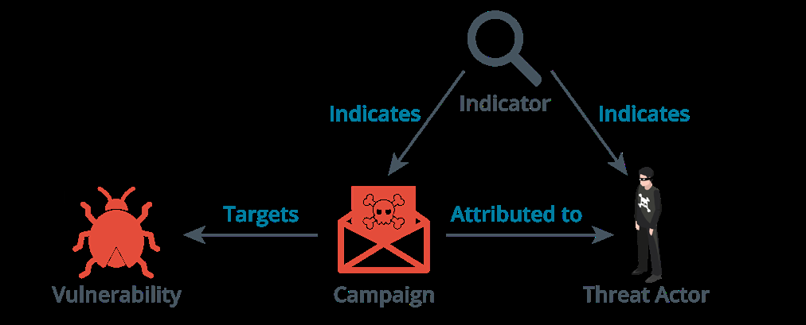
Automated indicator sharing (ais) - Is a include the common vulnerabilities and exposure (CVE). service offered by the dhs for companies to participate in threat intelligence sharing. Artificial Intelligence - Ai is the science ais is based on the stix and taxii standards of creating machine systems that can and protocols. simulate or demonstrate a similar general
intelligence capability to humans.
Threat map - A threat map is an animated graphic showing the source, target and Predictive analysis - This refers to when type of attacks detected by a cti platform. a system can anticipate an attack and
File/code repositories - such a repository possibly identify the threat actor before the attack is fully realized. holds signatures of known malware code.
74
8.9 Vulnerability Response & Remediation
Vulnerability scanning - This is an automated activity that relies on a database of known vulnerabilities such as the CVE.
Web app vulnerability scanners are specialized automated tools designed to identify vulnerabilities such as XSS and SQL injection attacks in websites and other web-based applications.
This category of tools is frequently referred to as the Dynamic Application Security Testing (DAST) tools.
True Positive False Positive True Negative False Negative
Normal or xpected Normal or xpected Abnormal or Abnormal or unexpected activity is
activity is incorrectly
activity is correctly unexpected activity incorrectly identified
identified is correctly identified as normal or abnormal identified as
expected
GOOD PROBLEMATIC GOOD DANGEROUS
Vulnerability Scanning & Assessments
System Configuration - Identify issues related to security configurations, compliance and
nonconformance.
Vulnerability Assessment - Identify host attributes and known Common Vulnerabilities
and Exposures (CVE)
Penetration Testing - Evaluate the security of a target by identifying and providing proof
of concept of flaws and vulnerabilities by performing compromise exploitation.
Vulnerability Analysis -This focuses on analyzing the results gotten from vulnerability scans and assessments to determine the level of risk associated with each identified vulnerability.
Very useful for prioritizing vulnerabilities.
75
Vulnerability Severity Levels
High - This can also be critical levels and such vulnerabilities have the potential to cause
significant damage and require immediate attention.
Medium - Could result in adverse consequences eventually and should be prioritized
based on their potential impact on the organization.
Low - Have limited impact and should be remediated as part of ongoing vulnerability
management efforts.
Patch Management -This is the process of identifying, acquiring, installing and verifying patches (updates)
The time from when an exploit first becomes active to the time it becomes insignificant is known as the Window of Vulnerability.
Patch Classifications
CRITICAL DEFINITION DRIVERS FEATURE PACKS
Fixes for critical For software Updates to virus and Provides new product functionality
non- security related components that
definition files for the next product
issues. control or regulate a
release
SECURITY SERVICE PACKS UPDATE ROLLUPS UPDATES
Provides a fix for a Provides a Provides a cumulative set of cumulative set of Provides fixes that product- specific, security updates, security updates, hot address non-critical, security-related hotfixes and design fixes and updates in non-security bugs vulnerability change or features one package
Patch Management Challenges
Unintentional consequences Approach - manual, automated, hybrid?
Roll-back issues Access to unmanaged mobile or
remote devices Prioritization, timing and testing
76
SECTION 9
EVALUATE NETWORK
SECURITY CAPABILITIES
9.1 Bench Marks & Secure Configuration Guides
Although frameworks provide a “high-level” view of how to plan its services, they generally don’t provide detailed implementation guidance.
At a system level, the deployment of servers and applications is covered by benchmarks and secure configuration guides.
Center For Internet Security (CIS)
A non profit organization that publishes the well-known (the cis critical security controls).
They also produce benchmarks for different aspects of cybersecurity e.g benchmarks for compliance with it frameworks include pci dss and iso 27000.
There are also product-focused benchmarks such as windows desktop, windows server, macos and web & email servers.
Os/Network Appliance Platform/ Hardening Guidelines For A Variety Of Vendor-Specific Guides Software And Hardware Solutions.
Operating System (Os) Best Practice National Checklist Program (Ncp) By Nist Provides Checklists And Configuration Lists The Settings And Benchmarks For A Variety Of Operating Controls That Should Be Applied For A Systems And Applications. Computing Platform To Work In Defined
Roles Such As Workstation, Server,
Network Switch/Router Etc. Application Servers
Most Vendors Will Provide Guides, Most Application Architectures Use A Templates And Tools For Configuring And Client/Server Model Which Means Part Validating The Deployment Of Network Of The Application Is A Client Software Appliances And Operating Systems And Program Installed And Run On Separate These Configurations Will Vary Not Only By Hardware To The Server Application Code. Vendor But By Device And Version As Well.
Attacks Can Therefore Be Directed At The
Department Of Defense Cyber Client, Server Or The Network Channel
Exchange Provides Security Technical Between Them.
Implementation Guides (Stigs) With
77
Open Web Application Security Project (Owasp)
A Non Profit Online Community That Publishes Several Secure Application Development Resources Such As The Owasp Top 10 That Lists The Most Critical Application Security Risks.
9.2 Hardening Concepts
Network equipment, software, and operating systems use default settings from the developer or manufacturer which attempt to balance ease of use with security. Unfortunately these default configurations are an attractive target for attackers as they usually include well-documented credentials, allow simple passwords and use insecure protocols which increase the likelihood of successful cyberattacks. Therefore, it’s crucial to change these default settings to improve security.
Hardening refers to the methods used to improve a device’s security by changing its default configuration. There are various ways for hardening switches, routers, server hardware and operating systems.
Switches & Routers Server Hardware and Operating Systems
Change default credentials Change default credentials
Disable unnecessary services Disable unnecessary services
and interfaces Apply security patches and updates
Use secure management Use firewalls and intrusion detection systems protocols such as SSH and
HTTPS instead of Telnet or HTTP Secure configuration
Implement Access Control Lists Enable logging and monitoring
Configure port security Use Antivirus and Antimalware solutions
Enforce strong password policies Enforce physical security
9.3- Wi-Fi Authentication Methods
Wi-Fi Authentication Comes In Three Types - Open, Personal And Enterprise.
Within The Personal Category, There Are Two Methods:
Pre-Shared Key Authentication (Psk)
Simultaneous Authentication Of Equals (Sae)
78
WPA2 pre-shared key authentication - In wpa2, pre-shared key (PSK) authentication uses a passphrase to generate the key for encryption.
The passphrase length is typically between 8 and 63 ascii characters and is then converted to a 256-bit HMAC value.
Wpa3 personal authentication - Wpa3 also uses a passphrase like wpa2 but it changes the method by which this secret is used to agree on session keys. this scheme is called password authenticated key exchange (PAKE)
Wi-fi protected setup (wps) - This is a feature of both WPA and WPA2 that allows enrollment in a wireless network based on an 8-digit pin.
It is vulnerable to brute force attacks and is set to be replaced by the easy connect method in wpa3 which uses quick response (qr) codes of each device.
Open authentication and captive portals - between the supplicant and authentication Open authentication means that the client server but only a server-side public key is not required to authenticate however certificate is required.
it can be combined with a secondary Eap with flexible authentication via secure authentication mechanism via a browser. tunneling (eap-fast) - is also similar to peap When the client launches the browser, but instead of a server side certificate, it the client is redirected to a captive portal uses a protected access credential (pac) or splash page where they will be able which is generated for each user from the to authenticate to the hotspot provider’s authentication server’s master key.
network. Radius federation - most implementations Enterprise/ieee 802.1x authentication - of eap use a radius server to validate the When a wireless station requests to join authentication credentials for each user. the network, its credentials are passed to
an aaa server on the wired network for organizations allow access to one Radius federation means that multiple validation.
another’s users by joining their radius
Once authenticated, the aaa server servers into a radius hierarchy or mesh.
transmits a master key (mk) to the station Rogue access points & evil twins - a rogue and then both of them will derive the same access point is one that has been installed pairwise master key (pmk) from the mk. on the network without authorization.
Extensible authentication protocol (eap) A rogue wap masquerading as a legitimate - This defines a framework for negotiating one is called an evil twin. an evil twin might authentication mechanisms rather than the have a similar ssid as the real one or the details of the mechanisms themselves. attacker might use some dos technique to Eap implementations can include smart overcome the legitimate wap.
cards, one-time passwords and biometric A rogue hardware WAP can be identified identifiers. through physical inspections. there are Peap, eap-ttls and eap-fast - in protected also various wi-fi analyzers that can detect extensible authentication protocol (peap), rogue waps including inssider and kismet
an encrypted tunnel is established Disassociation and replay attacks - a
79
disassociation attack exploits the lack of encryption in management frame traffic to send spoofed frames.
One type of disassociation attack injects management frames that spoof the mac address of a single victim causing it to be disconnected from the network.
Another variant broadcasts spoofed frames to disconnect all stations.
Jamming Attacks - A Wi-Fi Jamming Attack Can Be Performed By Setting Up A Wap With A Stronger Signal.
The Only Way To Defeat This Attack Is To Either Locate The Offending Radio Source And Disable It Or To Boost The Signal From The Legitimate Equipment.
9.4 Network Access Control
Network Access Control (NAC )not only authenticates users and devices before allowing them access to the network but also checks and enforces compliance with established security policies. By evaluating the operating system version, patch level, antivirus status, or the presence of specific security software, NAC ensures that devices meet a minimum set of security standards before being granted network access.
NAC also can restrict access based on user profile, device type, location, and other attributes, to ensure users and devices can only access the resources necessary to complete their duties. NAC plays a crucial role in identifying and quarantining suspicious or noncompliant devices.
NAC and virtual local area networks (VLANs) work together to improve and automate network security. One of the primary ways NAC integrates with VLAN protections is through dynamic VLAN assignment. Dynamic VLAN assignment is a NAC feature that assigns a VLAN to a device based on the user’s identity attributes, device type, device location, or health check results.
Agent vs Agentless Configurations
NAC can enforce security policies using agent-based and agentless methods.
In an agent-based approach, a software agent is installed on the devices that connect to the network. This agent communicates with the NAC platform, providing detailed information about the device’s status and compliance level. An agent-based NAC implementation can enable features such as automatic remediation, where the NAC agent can perform actions like updating software or disabling specific settings to bring a device into compliance with mandatory security configurations.
In contrast, an agentless NAC approach uses port-based network access control or network scans to evaluate devices. For example, agentless NAC may use DHCP fingerprinting to identify the type and configuration of a device when it connects, or it might perform a network scan to detect open ports or active services.
80
9.5 Network Security Monitoring
Network-based intrusion detection systems - An ids is a means of using software tools to provide real-time analysis of either network traffic or system and application logs. a network-based ids captures traffic via a packet sniffer referred to as a sensor. when traffic matches a detection signature, it raises an alert but will not block the source host.
Taps & port mirrors - Typically the packet capture sensor is placed inside a firewall or close to an important server and the idea is to identify malicious traffic that has managed to get past the firewall. depending on network size and resources, one or just a few sensors will be deployed to monitor key assets and network paths.
Network-based intrusion prevention systems (IPS) - An ips provides an active response to any network threat.
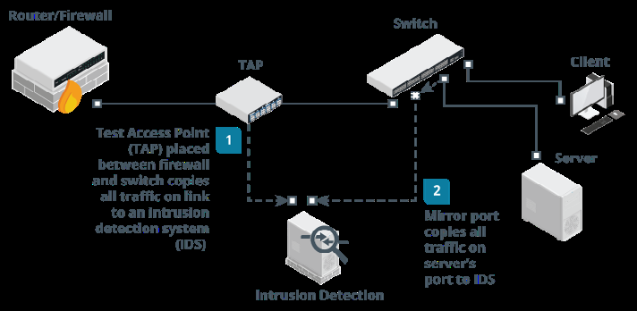
Typical responses to a threat can include blocking the attacker’s ip address (shunning), throttling the bandwidth to attacking hosts and applying complex firewall filters.
Next generation firewall (NGFW) - HGFW is a product that combines application-aware filtering with user account-based filtering and the ability to act as an ips.
Unified threat management (UTM) - This refers to a security product that centralizes many types of security controls - firewall, antimalware, spam filtering, vpn etc into a single appliance. The downside is that this creates a single point of failure that can affect the entire network. they can also struggle with latency issues if they are subject to too much network activity.
Content/url filter - A firewall typically has to sustain high loads of traffic which can increase latency and even cause network outages. a solution is to treat security solutions for server traffic differently from that of user traffic.
A Content Filter Is Designed To Apply A Number Of User-Focused Filtering Rules Such As Applying Time-Based Restrictions To Browsing.
Content Filters Are Now Implemented As A Class Of Product Called Secure Web Gateway (Swg) Which Can Also Integrate Filtering With The Functionality Of Data Loss Prevention.
81
Host-Based Ids - A Host-Based Ids (Hids) Captures Information From A Single Host. The Core Ability Is To Capture And Analyze Log Files But More Sophisticated Systems Can Also Monitor Os Kernel Files, Monitor Ports And Network Interfaces.
One Other Core Feature Is File Integrity Monitoring (Fim). Fim Software Will Audit Key System Files To Make Sure They Match The Authorized Versions.
Web Application Firewall (Waf) - A Waf Is Designed To Specifically Protect Software Running On Web Servers And Their Back-End Databases From Code Injection And Dos Attacks.
They Use Application-Aware Processing Rules To Filter Traffic And Perform Application-Specific Intrusion Detection.
9.6 Web Filtering
Its primary function is to block users from policies and rules and then apply them accessing malicious or inappropriate locally on the device. websites, thereby protecting the network
from potential threats. Centralized Web Filtering
Web filters analyze web traffic, often in A centralized proxy server plays a crucial real time, and can restrict access based on role in web content filtering by acting as an
various criteria such as URL, IP address, intermediary between end users and the content category, or even specific Internet. keywords.
When an organization routes Internet traffic
Agent-Based Web Filtering through a centralized proxy server, it can
effectively control and monitor all inbound
Agent-based web filtering involves and outbound web content.
installing a software agent on desktop The primary role of the proxy in web computers, laptops, and mobile devices. content filtering is to analyze web requests The agents enforce compliance with the from users and determine whether organization’s web filtering policies. to permit or deny access based on Agents communicate with a centralized established policies. management server to retrieve filtering
Centralized Web Filtering Techniques
URL Scanning - Where the proxy server examines the URLs requested by users.
Content Categorization - Classifies websites into categories
Block Rules - Uses the proxy server to implement block rules based on various factors
such as the website’s URL, domain, IP address and even specific keywords within the
web content.
Reputation-Based Filtering - This leverages continually updated databases that score
websites based on their observed behavior and history.
82
SECTION 10
ASSESS ENDPOINT
SECURITY CAPABILITIES
10.1 Endpoint Security
Hardening - This Is The Process Of Putting An Os Or Application In A Secure Configuration However Hardening Must Be Balanced Against The Access Requirements And Usability In A Particular Situation.
The Essential Principle Is Of Least Functionality Meaning The System Should Run Only The Protocols And Services Required By Legit Users And No More.
Interfaces, Services And Application Service Ports Not In Use Should Be Disabled.
Patch Management - On Residential And Small Networks, Hosts Can Be Configured To Auto-Update Either By The Windows Update Process Or In Linux With The Commands Yum-Cron Or Apt Unattended-Upgrades Depending On The Package Manager Used By The Distribution.
Patches Can Become Incompatible With A Particular Application And Cause Availability Issues. Update Repositories Can Also Be Infected With Malware That Can Then Be Spread Via Automatic Updates.
Antivirus (A-V)/ Anti-Malware - First Generation Of Antivirus Scanned For Only Viruses But Today They Can Perform Generalized Malware Detection.
While A-V Software Remains Important, Signature-Based Detection Is Widely Regarded To Be Insufficient For The Prevention Of Data Breaches.
Hardening - This Is The Process Of Putting An Os Or Application In A Secure Configuration However Hardening Must Be Balanced Against The Access Requirements And Usability In A Particular Situation.
The Essential Principle Is Of Least Functionality Meaning The System Should Run Only The Protocols And Services Required By Legit Users And No More.
Interfaces, Services And Application Service Ports Not In Use Should Be Disabled.
Patch Management - On Residential And Small Networks, Hosts Can Be Configured To Auto-Update Either By The Windows Update Process Or In Linux With The Commands Yum-Cron Or Apt Unattended-Upgrades Depending On The Package Manager Used By The Distribution.
83
Patches Can Become Incompatible With A Particular Application And Cause Availability Issues. Update Repositories Can Also Be Infected With Malware That Can Then Be Spread Via Automatic Updates.
Host-Based Intrusion Detection/Prevention (Hids/Hips) - Hids Provide Threat Detection Via Logs And File System Monitoring. Other Products May Also Monitor Ports And Network Interfaces And Process Data And Logs Generated By Specific Applications Such As Http Or Ftp.
Endpoint Protection Platform (Epp) - An Epp Is A Single Agent Performing Multiple Security Tasks, Including Malware/Intrusion Detection And Prevention But Also Other Features Such As Firewall, Web Content Filtering And File/Message Encryption.
Sandboxing - This Is A Technique That Isolates An Untrusted Host Or App In A Segregated Environment To Conduct Tests. Sandbox Offers More Than Traditional Anti-Malware Solutions Because You Can Apply A Variety Of Different Environments To The Sandbox Instead Of Just Relying On How The Malware Might Exist In Your Current Configuration.
10.2 Segmentation
This is the division of an enterprise Wireless -Supports wireless into security zones based on function, transmissions
performance and security requirements. VPN -Designed to facilitate secure Security zones are enforced by firewall communications over a public circuit ingress and egress access control lists
Micro-Segmentation - This is a method of creating zones within data centers and
Security Zones cloud environments to isolate workloads
from one another and secure them Untrusted -The organization has no
control individually.
It allows for the implementation of a zero Screened Subnet - Has connections to
both trusted and untrusted networks trust protect surface environments.
A protect surface is made up of the Trusted - The organization has
complete control network’s most critical and valuable data,
assets and applications.
Enclave -Is a restricted network within
a trusted network North-South traffic is one that flows into
and out of a data center or cloud while
Air Gapped -Does not connect to any East-West refers to traffic within a data
untrusted network center or cloud.
Physically Isolated -Does not connect
to any other network
84
Isolation - This is when zones, devices, sessions or even components need to be segregated so as not to cause harm or be harmed.
Virtualization - creates multiple environments from a single physical hardware system.
Logical - A VLAN divides a single existing network into multiple logical network segments which can be restricted.
10.3 Mobile Device Management
Mobile Device Deployment Models Include
Bring Your Own Device (BYOD) - The Mobile Device Is Owned By The Employee And
Will Have To Meet Whatever Security Profile Is Required. It’s The Most Common Model
For Employees But Poses The Most Difficulties For Security Managers.
Corporate Owned Business Only (COBO) - The Device Is Owned By The Company And
May Only Be Used For Company Business.
Corporate Owned, Personally-Enabled (COPE) - The Employee May Use It To Access
Personal Email ,Social Media Accounts And For Some Personal Web Browsing.
Choose Your Own Device (CYOD) - Very Similar To Cope Except That Here, The
Employee Is Given A Choice Of Device From A List.
Enterprise Mobility Management (EMM) - This Is A Class Of Management Software
Designed To Apply Security Policies To The Use Of Mobile Devices And Apps In An
Enterprise.
Mobile Device Management (Mdm) - Sets Device Policies For Authentication, Feature
Use (Camera And Microphone) And Connectivity. Mdm Also Allows Device Resets And
Remote Wipes.
Mobile Application Management (Mam) - Sets Policies For Apps That Can Process
Corporate Data And Prevents Data Transfer To Personal Apps.
Ios in the enterprise - In apple’s ios ecosystem, third-party developers can create apps using apple’s software development kit available only on macos.
Corporate control over ios devices and distribution of corporate and b2b apps is facilitated by participating in the device enrollment program, the volume purchase program and the developer enterprise program.W
85
Android in the enterprise - Android is open source meaning there is more scope for vendor-specific versions and the app model is far more relaxed.
The sdk is available on linux, windows and macos.
Mobile access control systems - If a threat actor is able to gain access to a smartphone, they might be able to gain access to plenty of confidential data as well as cached passwords for email, social media etc.
Smartphone authentication - Access control can be implemented by configuring a screen lock that can be bypassed using a password, pin or swipe pattern. Some devices also support biometrics like fingerprint readers.
Screen lock - The screen lock can also be configured with a lockout policy. For example, the device can be locked out for a period of time after a certain number of incorrect password attempts.
Context-aware authentication - Remote wipe - If the phone is stolen, it can Smartphones now allow users to disable be set to factory defaults or cleared of any screen locks when the device detects it personal data with the use of the remote is in a trusted location (home) however an wipe feature. it can also be triggered by enterprise may seek more stringent access several incorrect password attempts.
controls to prevent misuse of a device. In theory, the thief could prevent the For example, even if a device has remote wipe by ensuring the phone cannot
been unlocked, the user might need to connect to the network then hacking the reauthenticate in order to access the phone and disabling its security. corporate workspace.
Full device encryption & external media - in ios, there are various levels of encryption:
All user data on the device is always encrypted but the key is stored on the device. It’s
this key that is deleted in a remote wipe to ensure the data is inaccessible.
Email data and any apps using the “data protection” option are subject to a second round
of encryption using a key derived from the user’s credential.
Location services - location services make use of two systems:
Global positioning system (gps) - Means of determining the device’s latitude and
longitude based on information received from satellites via a gps sensor.
Indoor positioning system (ips) - Works out a device’s location by triangulating its
proximity to other radio sources such as cell towers and wi-fi access points.
86
Geofencing and camera /microphone enforcement - Geofencing is the practice of creating a virtual boundary based on real-world geography and can be a useful tool for controlling the use of camera or video functions or applying context-aware authentication.
GPS tagging - This is the process of adding geographical identification metadata such as latitude and longitude, photographs, sms messages, video and so on.
GPS tagging is highly sensitive personal information and potentially confidential organizational data also.
Content management - Containerization allows the employer to manage and maintain the portion of the device that interfaces with the corporate network. a container can also enforce storage segmentation where the container will be associated with a directory.
rooting & jailbreaking
Rooting - Associated with android devices and typically involves using custom firmware
Jailbreaking - Associated with ios and is accomplished by booting the device with a
patched kernel
Carrier unlocking - For either ios or android and it means removing the restrictions that
lock a device to a single carrier.
Rooting or jailbreaking mobile devices involves subverting the security measures on the device to gain super administrative access to it but also has the side effect of permanently disabling certain security features.
10.4 Secure Mobile Device Connections
Personal area networks (pans) - These enable connectivity between a mobile device and peripherals. Ad hoc (peer-to-peer) networks between mobile devices or between mobile devices and other computing devices can also be established
For corporate security, these peer-to-peer functions should generally be disabled.
Ad hoc wi-fi and wi-fi direct - An ad hoc network involves a set of wireless stations establishing peer-to-peer connections with one another rather than using an access point.
Wi-fi directly allows one-to-one connections between stations though one of them will serve as a soft access point.
Tethering and hotspots - A smartphone can share its internet connection with other devices via wi-fi making it a hotspot.
Where the connection is shared by connecting the smartphone to a pc via usb or bluetooth, it can be referred to as tethering.
87
Bluetooth connection methods
Device discovery - Allows the device to connect to any other bluetooth devices nearby.
Authentication & authorization - Use of a simple passkey to “pair” connecting devices
Malware
Bluetooth connection methods - Discoverable devices are vulnerable to bluejacking, where the spammer sends unsolicited messages to the device.
Bluesnarfing refers to using an exploit in bluetooth to steal information from someone else’s phone.
Infrared & rfid connection methods - infrared has been used for pan but it’s use in modern smartphones and wearable technology focuses on two other uses:
Ir blaster - This allows the device to interact with an ir receiver and operate a device such
as a tv as though it were the remote control.
Ip sensor - These are used as proximity sensors and to measure health information (heart
rate & blood oxygen levels).
Radio frequency id (rfid) is a means of encoding information into passive tags which can easily be attached to devices, clothing and almost anything else.
Skimming involves using a fraudulent rfid reader to read the signals from a contactless bank card
Microwave radio connection methods - Microwave radio is used as a backhaul link from a cell tower to the service provider’s network and these links are important to 5g where many relays are required and provisioning fiber optic cable backhaul can be difficult.
A microwave link can be provisioned in two modes:
Point-to-point (p2p) - Microwave uses high gain antennas to link two sites and each
antenna is pointed directly at the other. It’s very difficult to eavesdrop on the signal as
an intercepting antenna would have to be positioned within the direct path.
Point-to-multipoint (p2m) - Microwave uses smaller sectoral antennas each covering a
separate quadrant. P2m links multiple sites to a single hub and this can be cost-efficient
in high density urban areas.
88
SECTION 11
ENHANCE APPLICATION
SECURITY CAPABILITIES
11.1 Dns Security, Directory Services & Snmp
DNS Security - To Ensure Dns Security On A Private Network, Local Dns Servers Should Only Accept Recursive Queries From Local Authenticated Hosts And Not From The Internet.
Clients Should Be Restricted To Using Authorized Resolvers To Perform Name Resolution. Dns Footprinting Means Obtaining Information About A Private Network By Using Its Dns Server To Perform A Zone Transfer (All The Records In A Domain) To A Rogue Dns.
DNS Security Extensions (DNSSEC) - These Help To Mitigate Against Spoofing And Poisoning Attacks By Providing A Validation Process For Dns Responses.
Secure Directory Services - A Network Directory Lists The Subjects (Users, Computers And Services) And Objects (Directories And Files) Available On The Network Plus The Permissions Subjects Have Over Objects.
Most Directory Services Are Based On The Lightweight Directory Access Protocol (Ldap) Running Over Port 389.
Authentication Referred To As Binding To The Server Can Be Implemented By:
No Authentication - Anonymous Access Is Granted
Simple Bind - The Client Must Supply Its Distinguished Name And Password In Plaintext
Simple Authentication And Security Layer (Sasl) - The Client And Server Negotiate The
Use Of A Supported Authentication Mechanism Such As Kerberos.
Ldap Secure (Ldaps) - The Server Is Installed With A Digital Certificate Which It Uses To
Setup A Secure Tunnel For The User Credential Exchange. Ldaps Use Port 636.
Generally Two Levels Of Access To The Directory Can Be Granted Which Are Read-Only Access (Query) And Read/Write Access (Update) And Is Implemented Using An Access Control Policy.
Time Synchronization - Many Network Applications Are Time Dependent And Time Critical. The Network Time Protocol (Ntp) Provides A Transport Over Which To Synchronize These Time Dependent Applications
Ntp Works Over Udp On Port 123.
89
Ntp Has Historically Lacked Any Sort Of Security Mechanism But There Are Moves To Create A Security Extension For The Protocol Called Network Time Security.
Simple Network Management Protocol (Snmp) Security - This Is A Widely Used Framework For Management And Monitoring And Consists Of An Snmp Monitor And Agents. The Agent Is A Process (Software Or Firmware) Running On A Switch, Router, Server Or Other Snmp-Compatible Network Device.
This Agent Maintains A Database Called A Management Information Base (Mib) That Holds Statistics Relating To The Activity Of The Device. The Agent Is Also Capable Of Initiating A Trap Operation Where It Informs The Management System Of A Notable Event Like Port Failure.
11.2 Secure Application Operations Protocols
HTTP enables clients to request resources from an HTTP server. The server acknowledges the request and responds with the data or an error message.
HTTP is a stateless protocol which means the server preserves no information about the client during a session.
Transport Layer Security - Secure Sockets Layer (SSL) was developed by Netscape in the 1990s to address the lack of security in HTTP and was quickly adopted as a standard named Transport Layer Security (TLS).
To implement TLS, a server is assigned a digital certificate signed by some trusted CA. The certificate proves the identity of the server and validates the server’s public/private key pair.
The server uses its key pair and the TLS protocol to agree mutually supported ciphers with the client and negotiate an encrypted communications session.
SSL/TLS Version - A server can provide support for legacy clients meaning a TLS 1.2 server could be configured to allow clients to downgrade to TLS 1.1 or 1.0
TLS 1.3 was approved in 2018 and the ability to perform downgrade attacks was mitigated by preventing the use of unsecure features and algorithms from previous versions.
Cipher Suites - This is a set of algorithms supported by both the client and server to perform the different encryption and hashing operations required by the protocol.
Prior to TLS 1.3, a cipher suite would be written like this
90
ECDHE-RSA-AES128-GCM-SHA256
This means that the server can use Elliptic Curve Diffie-Hellman Ephemeral mode for a session key agreement, RSA signatures, 128-bit AES-GCM (Galois Counter Mode) for symmetric bulk encryption and 256-bit SHA for HMAC functions.
TLS 1.3 uses simplified and shortened suites
TLS_AES_256_GCM_SHA384
Only ephemeral key agreement is supported in 1.3 and the signature type is supplied in the certificate so the cipher suite only lists the bulk encryption key strength and mode of operation (AES_256_GCM) plus the cryptographic hash algorithm (SHA384).
11.3 File Transfer, Email & Video Services
FTP - File Transfer Protocol is the most popular protocol for transferring files across networks because it is very efficient and has wide cross-platform support but has no security mechanism.
SSH FTP (SFTP) & FTP over SSL (FTPS) - SFTP addresses the lack of security by encrypting the authentication and data transfer between client and server. SFTP uses port 22.
Explicit TLS (FTPES) - Use the AUTH TLS command to upgrade and insecure connection established on port 21 to a secure one.
Implicit TLS (FTPS) - Negotiates an SSL/TLS tunnel before the exchange of any FTP commands. This mode uses the secure port 990 for the control connection.
Email Services: These use two Secure SMTP (SMTPS) - types of protocols: communications can be secured
using TLS and there are two ways The Simple Mail Transfer Protocol
(SMTP) which specifies how mail is sent to do this:
from one system to another. STARTTLS - This command will upgrade an existing unsecure connection to use A mailbox protocol stores messages
for users and allows them to download TLS. Also referred to as explicit TLC or
them to client computers or manage opportunistic TLS.
them on the server. SMTPS - This establishes the
secure connection before any SMTP
commands are exchanged. Also
referred to as implicit TLS.
91
Typical SMTP configurations use the following ports and secure services:
Port 25 - Used for message relay between SMTP servers or Message Transfer Agents
(MTA)
Port 587 - Used by mail clients to submit messages for delivery by an SMTP server
Port 465 - Some providers and mail clients use this port for message submission over
implicit TLS (SMTPS)
Secure POP (POP3S) - The Post Office Protocol v3 is a mailbox protocol designed to store the messages delivered by SMTP on a server.
Secure IMAP (IMAPS) - The Internet Message Access Protocol v4 (IMAP4) supports permanent connections to a server and connecting multiple clients to the same mailbox simultaneously.
Secure/Multipurpose Internet Mail Extensions (S/MIME) - Is a means of applying both authentication and confidentiality on a per-message basis.
11.4 Email Security
Sender Policy Framework (SPF) - Is an email authentication method that helps detect and prevent sender address forgery commonly used in phishing and spam emails.
SPF works by verifying the sender’s IP address against a list of authorized sending IP addresses published in the DNS TXT records of the email sender’s domain.
DomainKeys Identified Mail (DKIM) - Leverages encryption features to enable email verification by allowing the sender to sign emails using a digital signature, The receiving email server uses a DKIM record in the sender’s DNS record to verify the signature and the email’s integrity.
Domain-based Message Authentication, Reporting & Conformance (DMARC) - Uses the results of SPF and DKIM checks to define rules for handling messages, such as moving messages to quarantine or spam, rejecting them outright or tagging the message.
An email gateway - Is the control point for all incoming and outgoing email traffic. It acts as a gatekeeper, scrutinizing all emails to remove potential threats before they reach inboxes. Email gateways utilize several security measures, including anti-spam filters, antivirus scanners, and sophisticated threat detection algorithms to identify phishing attempts, malicious URLs, and harmful attachments.
92
The combined use of SPF, DKIM, and DMARC significantly enhances email security by making it much more difficult for attackers to impersonate trusted domains, which is one of the most common tactics used in phishing and spam attacks.
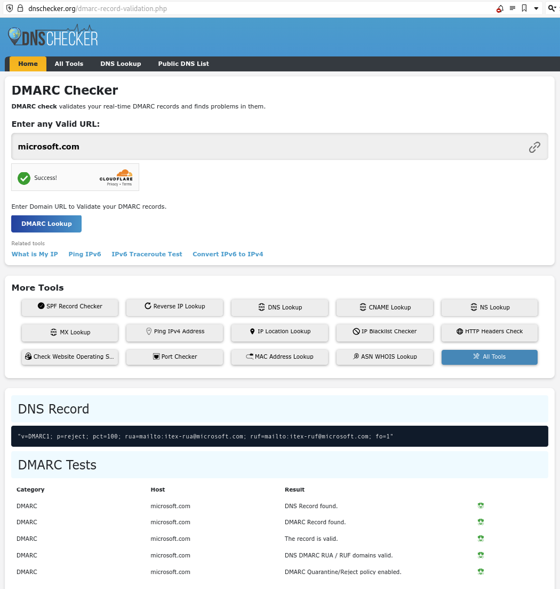
93
11.5 Secure Coding Techniques
Input Validation - Malicious Input Could Be Crafted To Perform An Overflow Attack Or Some Type Of Script Or Sql Injection Attack.
To Mitigate This, There Should Be Routines To Check User Input And Anything That Does Not Conform To What Is Required Must Be Rejected.
Normalization And Output Encoding - Normalization Means That A String Is Stripped Of Illegal Characters Or Substrings And Converted To The Accepted Character Set. This Ensures That The String Is In A Format That Can Be Processed Correctly By The Input Validation Routines.
Output Encoding Means That A String Is Re-Encoded Safely For The Context In Which It Is Being Used.
Server-Side Versus Client-Side Validation - A Web Application Can Be Designed To Perform Code Execution And Input Validation Locally (On The Client) Or Remotely (On The Server).
The Main Issue With Client-Side Validation Is That The Client Will Always Be More Vulnerable To Some Sort Of Malware Interfering With The Validation Process.
Main Issue With Server-Side Validation Is That It Can Be Time-Consuming As It May Involve Multiple Transactions Between The Server And Client.
Client-Side Validation Is Usually Restricted To Informing The User That There Is Some Sort Of Problem With The Input Before Submitting It To The Server. Relying On Client-Side Validation Only Is Poor Programming Practice.
Web Application Security In Response Headers
A Number Of Security Options Can Be Set In The Response Header
Http Strict Transport (Hsts) -Forces Browser To Connect Using Https Only, Mitigating
Downgrade Attacks Such As Ssl Stripping.
Content Security Policy (Csp) - Mitigates Clickjacking, Script Injection And Other Client-
Side Attacks.
Cache Control -Sets Whether The Browser Can Cache Responses. Preventing Caching
Of Data Protects Confidential And Personal Information Where The Client Device Might
Be Shared By Multiple Users.
Data Exposure And Memory Management -Data Exposure Is A Fault That Allows Privileged Information Such As A Password Or Personal Data To Be Read Without Being Subject To The Appropriate Access Controls.
A Well-Written Application Must Be Able To Handle Errors And Exceptions Gracefully. Ideally The Programmer Should Have Written A Structured Exception Handler (Seh) To Dictate What The Application Should Then Do.
94
The Error Must Not Reveal Any Platform Information Or Inner Workings Of The Code To An Attacker.
Secure Code Usage - A Program May Make Use Of Existing Code In The Following Ways:
Code Reuse -Using A Block Of Code From Elsewhere In The Same Application Or From
Another Application To Perform A Different Function.
Third-Party Library - Using A Binary Package (Such As A Dynamic Link Library) That
Implements Some Sort Of Standard Functionality Such As Establishing A Network
Connection.
Software Development Kit (Sdk) - Using Sample Code Or Libraries Of Pre-Built
Functions From The Programming Environment Used To Create The Software.
Stored Procedures - Using A Pre-Built Function To Perform A Database Query.
Unreachable code and dead code
Unreachable code is a part of application source code that can never be executed (if ... then conditional logic that is never called because the conditions are never met).
Dead code is executed but has no effect on the program flow (a calculation is performed but the result is never stored as a variable or used to evaluate a condition).
Static code analysis - this is performed against the application code before it is packaged as an executable process. The software will scan the source code for signatures of known issues.
Human analysis of software source code is described as a manual code review. It is important that the code be reviewed by developers other than the original coders to try to identify oversights, mistaken assumptions or a lack of experience.
Dynamic code analysis - static code review will not reveal any vulnerabilities that exist in the runtime environment. dynamic analysis means that the application is tested under real world conditions using a staging environment.
Fuzzing is a means of testing that an application‘s input validation routines work well. fuzzing will deliberately generate large amounts of invalid or random data and record the responses made by the application.
Associated with fuzzing is the concept of stress testing an application to see how an application performs under extreme performance or usage scenarios.
Finally, the fuzzer needs some means of detecting an application crash and recording which input sequence generated the crash.
95
SECTION 12 -
EXPLAIN INCIDENT
RESPONSE AND
MONITORING CONCEPTS
12.1 - Incident Response Process
This is a set of policies and procedures that are used to identify, contain, and eliminate cyberattacks. The goal is to allow an organization to quickly detect and stop attacks, minimize damage and prevent future attacks of the same type.
Principal stages in incident response life cycle
Preparation - Makes the system resilient to attack. this includes: hardening systems,
writing policies and procedures,and creating incident response resources and
procedures
Identification - Determine whether an incident has taken place, assess how severe it
might be and then notify the appropriate personnel.
Containment - Limits the scope and magnitude of the incident. The main aim of incident
response is to secure data while limiting the immediate impact on customers and
business partners.
Eradication - Once the incident is contained, the vulnerability/issue is removed and the
affected systems are restored to a secure state.
Recovery - The restored system is then reintegrated back into the business process that
it supports
Lessons learned - Analyze the incident and responses to identify whether procedures or
systems could be improved. It is also imperative to document the incident.
96
12.2 Cyber Incident Response Team
Preparing For Incident Response Means Establishing The Policies And Procedures For Dealing With Security Breaches And The Personnel And Resources To Implement Those Policies.
First Task Is To Define And Categorize Types Of Incidents. In Order To Identify And Manage Incidents, You Should Develop Some Method Of Reporting, Categorizing And Prioritizing Them.
An Incident Response Team Can Be Referred To As A Cyber Incident Response Team (Cirt), Computer Security Incident Response Team (Csirt) Or Computer Emergency Response Team (Cert).
For Major Incidents, Expertise From Other Business Divisions Might Be Needed
Legal - The Incident Can Be Evaluated From The Perspective Of Compliance With Laws
And Industry Regulations.
Human Resources (Hr) - Incident Prevention And Remediation Actions May Affect
Employee Contracts, Employment Law And So On.
Marketing -The Team Is Likely To Require Marketing Or Public Relations Input So Any
Negative Publicity From A Serious Incident Can Be Managed.
Incident Response Policies Should Establish Clear Lines Of Communication Both For Reporting Incidents And For Notifying Affected Parties.
Status And Event Details Should Be Circulated On A Need-To-Know Basis And Only To Trusted Parties Identified On A Call List.
Trusted Parties Might Include Both Internal And External Stakeholders.
Obligations To Report The Attack Must Be Carefully Considered And It May Be Necessary To Inform Affected Parties During Or Immediately After The Incident So That They Can Perform Their Own Remediation E.G “ Change Your Passwords Immediately “
12.3 Incident Response Plan
This Lists The Procedures, Contacts And Resources Available To Responders For Various Incident Categories.
A Playbook Is A Data-Driven Standard Operating Procedure (Sop) To Assist Junior Analysts In Detecting And Responding To Specific Cyberthreat Scenarios.
97
One Challenge In Incident Management Is To Allocate Resources Efficiently And There Are Several Factors That Can Affect This Process.
Data Integrity -The Most Important Factor In Prioritizing Incidents
Downtime - An Incident Can Either Degrade Or Interrupt The Availability Of An Asset Or
System.
Economic/Publicity -Both Data Integrity And Downtime Will Have Important Economic
Effects. Short-Term Might Involve Lost Business Opportunity While Long-Term May
Involve Damage To Reputation And Marketing Standing.
Scope - Refers To The Number Of Affected Systems In An Incident
Detection Time - Research Has Shown That More Than Half Of Data Breaches Are Not
Detected For Weeks Or Months. This Demonstrates That Systems Used To Search For
Intrusions Must Be Thorough.
Recovery Time -Some Incidents Require Lengthy Remediation As The System Changes
Required Are Complex To Implement.
A Key Tool For Threat Research Is A Framework To Use To Describe The Stages Of An Attack And These Stages Are Referred To As A Cyber Kill Chain.
98
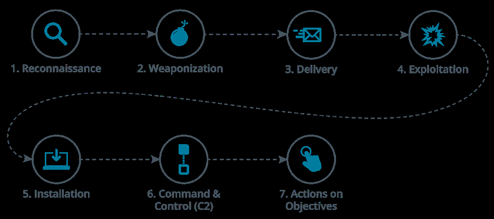
Mitre Att&Ck - An Alternative To The Kill Chain Is The Mitre Corporation’s Adversarial Tactics, Techniques And Common Knowledge
It Provides Access To A Database Of Known Ttps And Tags Each Technique With A Unique Id And Places It In One Or More Tactic Categories Such As Initial Access , Persistence Or Command & Control.
Diamond Model Of Intrusion Analysis - This Suggests A Framework To Analyze An Intrusion Event (E) By Exploring The Relationships Between Four Core Features: Adversary, Capability, Infrastructure And Victim.
Each Event May Also Be Described By Meta-Features Such As Date/Time, Kill Chain Phase Etc.
99
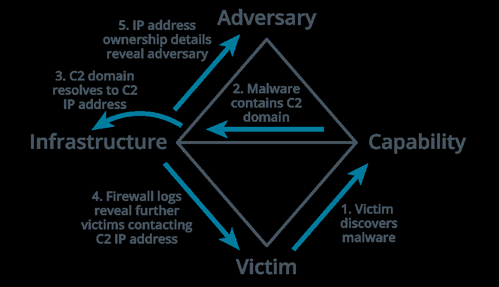
12.4 Incident Response Exercises, Recovery And
Retention Policy
Identification - This Is The Process Of Collating Events And Determining Whether Any Of Them Should Be Managed As Incidents Or As Possible Precursors To An Incident.
Tabletop - Least Costly Where The Facilitator Presents A Scenario And The Responders
Explain What Action They Would Take To Identify, Contain And Eradicate The Threat.
Flashcards Are Used In Place Of Computer Systems.
Walkthroughs - Similar To Tabletop Except Here The Responders Demonstrate What
Actions They Would Take In Response Such As Running Scans And Analyzing Sample
Files.
Simulations - A Team Based Exercise Where The Red Team Attempts An Intrusion, The
Blue Team Operates Response And Recovery Controls And The White Team Moderates
And Evaluates The Exercise.
Disaster recovery plan - Also called the emergency response plan. This is a document meant to minimize the effects of a disaster or disruption. meant for short term events and implemented during the event itself.
Business continuity plan - Identifies how business processes should deal with both minor and disaster-level disruption. a continuity plan ensures that business processes can still function during an incident even if at a limited scale.
Continuity of operation planning (COOP) - This terminology is used for government facilities but is functionally similar to business continuity planning. In some definitions, coop refers specifically to backup methods of performing mission functions without IT support.
Retention policy - a retention policy for historic logs and data captures sets the period of which these are retained. indicators of a breach might be discovered only months after the breach and this would not be possible without the retention policy to keep logs and other digital evidence.
Training On Specific Incident Response Scenarios Can Use Three Forms
Tabletop - Least Costly Where The Facilitator Presents A Scenario And The Responders
Explain What Action They Would Take To Identify, Contain And Eradicate The Threat.
Flashcards Are Used In Place Of Computer Systems.
Walkthroughs -Similar To Tabletop Except Here The Responders Demonstrate What
Actions They Would Take In Response Such As Running Scans And Analyzing Sample
Files.
Simulations - A Team Based Exercise Where The Red Team Attempts An Intrusion, The
Blue Team Operates Response And Recovery Controls And The White Team Moderates
And Evaluates The Exercise.
100
Disaster recovery plan - also called the emergency response plan. This is a document meant to minimize the effects of a disaster or disruption. meant for short term events and implemented during the event itself.
Business continuity plan - identifies how business processes should deal with both minor and disaster-level disruption. a continuity plan ensures that business processes can still function during an incident even if at a limited scale.
Continuity of operation planning (COOP) - this terminology is used for government facilities but is functionally similar to business continuity planning. In some definitions, coop refers specifically to backup methods of performing mission functions without IT support.
Retention policy - a retention policy for historic logs and data captures sets the period of which these are retained. indicators of a breach might be discovered only months after the breach and this would not be possible without the retention policy to keep logs and other digital evidence.
12.5 Incident Identification
Training On Specific Incident Response Scenarios Can Use Three Forms
Using Logs, Error Messages And Ids/Firewall Alerts
Comparing Deviations To Established Metrics To Recognize Incidents And Their Scopes
Manual Or Physical Inspections Of Site, Premises, Networks And Hosts
Notification By An Employee, Customer Or Supplier
Public Reporting Of New Vulnerabilities
Correlation - This Means Interpreting The Relationship Between Individual Data Points To Diagnose Incidents Of Significance To The Security Team.
A SIEM (Security Information And Event Management System) Correlation Rule Is A Statement That Matches Certain Conditions.
These Rules Use Logical Expressions Such As And And Or And Operators (==, <,>, In)
A Single-User Logon Failure Might Not Raise An Alert However Multiple Failed Logins For The Same Account Over A Short Period Of Time Should Raise One.
Error.Logonfailure > 3 And Logonfailure.Alice And Duration < 10 Minutes
One of the biggest challenges in operating a SIEM is tuning the system sensitivity to reduce false positive indicators being reported as an event.
101
The correlation rules are likely to assign a criticality level to each match.
Trend analysis - This is the process of detecting patterns or indicators within a data set over a time series and using those patterns to make predictions about future events.
Frequency-based trend analysis establishes a baseline for a metric such as number of
errors per hour of the day. if the frequency exceeds the threshold for the baseline, then
an alert is raised.
Volume-based trend analysis - this can be based on logs growing much faster than
usual. This analysis can also be based on network traffic and endpoint disk usage.
Statistical deviation analysis can show when a data point should be treated as suspicious.
For example, a data point that appears outside the two clusters for standard and admin
users might indicate some suspicious activity by that account.
Logging platforms - Log data from network appliances and hosts can be aggregated by a siem either by installing a local agent to collect the data or by using a forwarding system to transmit logs directly to the siem server.
Syslog - Provides an open format, protocol and server software for logging event messages and it’s used by a very wide range of host types.
A syslog message comprises a pri code, a header containing a timestamp and host name and a message part. usually uses UDP port 514
Rsyslog uses the same configuration file syntax but can work over tcp and use a secure
connection.
Syslog-ng uses a different configuration file syntax but can also use tcp/secure
communications and more advanced options for message filtering.
In linux, rather than writing events to syslog-format text files, logs from processes are written to a binary-format called journald.
Events captured by journald can be forwarded to syslog and to view events in journald directly, you can use journalct command to print the entire journal log.
System & security logs - The five main categories of windows event logs are:
Application - Events generated by applications and services
Security - Audit events such as a failed logon or denied access to a file
System - Events generated by the os and its services such as storage volume health
checks
Setup - Events generated during the windows installation
Forwarded Events - Events that are sent to the local log from other hosts.
102
Network logs can be generated from routers, firewalls, switches and access points.
Authentication attempts for each host are likely to be written to the security log.
DNS event logs may be logged by a dns server while web servers are typically configured to log http traffic that encounters an error or traffic that matches some predefined rule set.
The status code of a response can reveal something about both the request and the server’s behavior.
Codes in the 400 range indicate client-based errors
Codes in the 500 range indicate server-based errors
“403” may indicate that the server is rejecting a client’s attempts to access resources
they are not authorized to.
“502” (bad gateway) response could indicate that communications between the target
server and its upstream server are being blocked or the upstream server is down.
Dump files - A system memory dump creates an image file that can be analyzed to identify the processes that are running, the contents of temporary file systems, registry data, network connections and more.
It can also be a means of accessing data that is encrypted when stored on a mass storage device.
Metadata - This the properties of data as it is created by an application stored on media or transmitted over a network. Metadata sources are useful during an investigation as they can establish timeline questions as well as containing other types of evidence.
File - File metadata is stored as attributes. The file system tracks when a file was created, accessed and modified. The acl attached to a file showing its permissions also represents another type of attribute.
Web - when a client requests a resource from a web server, the server returns the resource plus headers setting or describing its properties. headers describe the type of data returned.
Email - An email’s internet header contains address information for the recipient and sender plus details of the servers handling transmission of the message between them.
Mobile - Phone metadata comprises call detail records (CDRs) of incoming, outgoing and attempted calls and sms text time, duration and the opposite party’s number. meta data will also record data transfer volumes and the location history of the device can be tracked by the list of cell towers it has used to connect to the network.
Netflow/ipfix - A flow collector is a means of recording metadata and statistics about network traffic rather than recording each frame.
103
Flow analysis tools can provide features such as:
Highlighting trends and patterns in traffic generated by particular applications,
hosts and ports.
Alerting based on detection of anomalies or custom triggers
Identification of traffic patterns revealing rouge user behavior or malware in transit
12.6 Digital Forensics Documentation
Digital Forensics Is The Practice Of Collecting Evidence From Computer Systems To A Standard That Will Be Accepted In A Court Of Law.
Prosecuting External Threat Sources Can Be Difficult As The Threat Actor May Be In A Different Country Or Have Taken Effective Steps To Disguise Their Location.
Like Dna Or Fingerprints, Digital Evidence Is Latent Meaning That The Evidence Cannot Be Seen With The Naked Eye; Rather It Must Be Interpreted Using A Machine Or Process.
Due Process - Term Used In Us And Uk Common Law That Requires That People Only Be Convicted Of Crimes Following The Fair Application Of The Laws Of The Land.
The First Response Period Following Detection And Notification Is Often Critical. To Gather Evidence Successfully, It‘s Vital That Staff Do Not Panic Or Act In A Way That Would Compromise The Investigation.
Legal Hold - This Refers To The Fact That Information That May Be Relevant To A Court Case Must Be Preserved. This Means That Computer Systems May Be Taken As Evidence With All The Obvious Disruption To A Network That Entails.
Chain Of Custody - This Documentation Reinforces The Integrity And Proper Handling Of Evidence From Collection, To Analysis, To Storage And Finally To Presentation. It Is Meant To Protect An Organization Against Accusations That Evidence Has Been Tampered With During A Trial.
Digital Forensics Reports - A Report Summarizes The Significant Contents Of The Digital Data And The Conclusions From The Investigator‘s Analysis.
Analysis Must Be Performed Without Bias. Conclusions And Opinions Should Be Formed
Only From The Direct Evidence Under Analysis.
104
Analysis Methods Must Be Repeatable By Third Parties With Access To The Same
Evidence
Ideally, The Evidence Must Not Be Changed Or Manipulated.
E-Discovery - This Is A Means Of Filtering The Relevant Evidence Produced From All The Data Gathered By A Forensic Examination And Storing It In A Database In A Format Such That It Can Be Used As Evidence In A Trial.
Some Of The Functions Of E-Discovery Suites Are:
Identify And De - Duplicate Files And Metadata
Search - Allows Investigators To Locate Files Of Interest To The Case.
Tags - Apply Standardized Keywords Or Labels To Files And Metadata To Help Organize
The Evidence.
Security - At All Points Evidence Must Be Shown To Have Stored, Transmitted And
Analyzed Without Tampering.
Disclosure - An Important Part Of The Trial Procedure Is That Evidence Is Made Available
To Both Plaintiff And Defendant.
Video and witness interviews - The first phase of a forensics investigation is to document the scene by taking photographs and ideally audio and video.
As well as digital evidence, an investigator should interview witnesses to establish what they were doing at the scene and whether they observed any suspicious behavior or activity.
Timelines - A very important part of a forensic investigation will involve tying events to specific times to establish a consistent and verifiable narrative. This visual representation of events in a chronological order is called a timeline.
Operating systems and files use a variety of methods to identify the time at which something occurred but the benchmark time is coordinated universal time (utc).
Local time will be offset from UTC by several hours and this local time offset may also vary if a seasonal daylight saving time is in place.
NTFSuses utc “internally“ but many OS and file systems record timestamps as the local system time and when collecting evidence, it is vital to establish how a timestamp is calculated and note the offset between the local system time and utc.
105
Event logs and network traffic - An investigation may also obtain the event logs for one or more network appliances and/or server hosts. network captures might provide valuable evidence.
For forensics, data records that are not supported by physical evidence (data drive) must meet many tests to be admissible in court. if the records were captured by a SIEM, it must demonstrate accuracy and integrity.
The intelligence gathered from a digital forensic activity can be used in two different ways:
Counterintelligence - Identification and analysis of specific adversary tactics, techniques
and procedures (TTPS) provides information on how to configure and audit systems so
they are better able to capture evidence of attempted and successful intrusions.
Strategic Intelligence - Data that has been analyzed to produce actionable insights.
These insights are used to inform risk management and security control provisioning to
build mature cybersecurity capabilities.
12.7 Digital Forensics Evidence Acquisition
Acquisition is the process of obtaining a forensically clean copy of data from a device held as evidence. if the system is not owned by the organization then the seizure could be challenged legally (BYOD)
Data acquisition is also more complicated when capturing evidence from a digital scene compared to a physical one (evidence may be lost due to system glitches or loss of power).
Data acquisition usually proceeds by using a tool to make an image from the data held on the target device. the image can be acquired from either volatile or nonvolatile storage.
Digital acquisition and order of volatility - the general principle is to capture evidence in the order of volatility from more volatile to less volatile.
106
According to the ISOC, the order is as follows
Cpu registers and cache memory
Contents of ram including routing table, arp cache, kernel statistics
Data on persistent mass storage devices like hard drives, usbs
Remote logging and monitoring data
Physical configuration and network topology
Archival media and printed documents
Digital forensics software include:
Encase forensic is a digital forensics case management product. contains workflow
templates showing the key steps in diverse types of investigation.
The forensic toolkit (ftk) from accessdata. a commercial investigation suite designed to
run on windows server.
The sleuth kit - an open source collection of command line tools and programming
libraries for disk imaging and file analysis. autopsy is the gui that sits on top of the kit and
is accessed through a web browser.
Winhex - a commercial tool for forensic recovery and analysis of binary data, with support
for a range of file systems and memory dump types.
The volatility framework which is widely used for system memory analysis.
Disk image acquisition refers to acquiring data from non-volatile storage. it could also be referred to as device acquisition meaning the ssd storage in a smartphone or media player.
There are three device states for persistent storage acquisition
Live acquisition - Means copying the data while the host is still running. this may capture more evidence or more data for analysis and reduce the impact on overall services. however the data on the actual disks will have changed so this method may not produce legally acceptable evidence.
Static acquisition by shutting down the host - runs the risk that the malware will detect the shut-down process and perform anti-forensics to try and remove traces of itself.
Static acquisition by pulling the plug - This means disconnecting the power at the wall socket. This will likely preserve the storage device in a forensically clean state but there is the risk of corrupting data.
Whichever method is chosen, it is important to document the steps taken and supply a
107
timeline of all actions.
Preservation and integrity of evidence - It is vital that the evidence collected at the crime scene conform to a valid timeline. recording the whole process establishes provenance of the evidence as deriving directly from the crime scene.
To obtain a clean forensic image from a non-volatile storage, you need to ensure nothing you do alters the data or metadata on the source disk or file system. A write blocker can ensure this by preventing any data from being changed by filtering write commands.
The host devices and media taken from the crime scene should be labeled, bagged and sealed using tamper-evident bags. bags should have anti-static shielding to reduce the possibility that data will be damaged or corrupted on the electronic media by electrostatic discharge.
The evidence should be stored in a secure facility.
Acquisition of other data types includes:
Network -Packet captures and traffic flows can contain evidence. most networks will
come from a SIEM.
Cache - Software cache can be acquired as part of a disk image. the contents of
hardware cache are generally not recoverable.
Artifacts and data recovery - Artifact refers to any type of data that is not part of the
mainstream data structures of an os. Data recovery refers to analyzing a disk for file
fragments that might represent deleted or overwritten files. The process of recovering
them is referred to as carving.
Snapshot - Is a live acquisition image of a persistent disk and may be the only means of
acquiring data from a virtual machine or cloud process.
Firmware - Is usually implemented as flash memory. Some types like the pc firmware can
potentially be extracted from the device or from the system memory using an imaging
utility.
108
12.8 Data Sources
Incident investigation often requires analysis of several data sources in order to draw a defensible conclusion.
Vulnerability Scans
Log files
SIME dashboards
Metadata
Packet capture
Log Analysis and Response Tools
Security Information Event Management (SIEM) is an automation tool for real-time data
capture, event correlation, analysis and reporting
Threat Intelligence Platform (TIP) is an automation tool that combines multiple threat
intelligence feeds and integrates with existing SIEM solutions
User & Entity Behavior Analytics (UEBA) - is an automation tool that models human and
machine behavior to identify normal and abnormal behavior.
Security Orchestration, Automation and Response (SOAR) is an automation tool that
responds to alerts and takes remediation steps.
Packet Capture - This is the process Packet Capture Modes
of intercepting and logging traffic Normal - The network interface card for analysis. (NIC) only captures frames intended for
the interface (filtering by MAC address) A protocol analyzer (sniffer) is a tool
used to capture and analyze network Promiscuous - The NIC accepts any
packets frame it captures even if it was not the
intended recipient A port mirror captures network traffic
from one or several ports of a switch Unfiltered - Packet capture regardless
and forwards a copy of the traffic to an of data elements
analysis device
Filtered - Packet capture limited to
A network TAP is a dedicated hardware specific data elements
device that is inserted between network
devices and makes copies of the traffic
and forwards to an analysis device.
109
SECTION 13 -
ANALYZE INDICATORS OF
MALICIOUS ACTIVITY
13.1 Malware Classification
Some Malware Classifications Such As Trojan, Virus And Worm Focus On The Vector Used By The Malware. The Vector Is The Method By Which The Malware Executes On A Computer And Potentially Spreads To Other Network Hosts.
The Following Categories Describe Some Types Of Malware According To Vector:
Viruses & Worms -Spread Without Any Authorization From The User By Being
Concealed Within The Executable Code Of Another Process.
Trojan - Malware Concealed Within An Installer Package For Software That
Appears To Be Legitimate
Potentially Unwanted Programs/Applications (Pups/Puas) -These Are Software
Installed Alongside A Package Selected By The User. Unlike A Trojan, Their
Presence Isn’t Necessarily Malicious. They Are Sometimes Referred To As
Grayware.
Other Classifications Are Based On The Payload Delivered By The Malware. The Payload Is The Action Performed By The Malware
Examples Of Payload Classification Include:
Spyware
Rootkit
Remote Access Trojan (Rat)
Ransomware
110
13.2 Computer Viruses
This Is A Type Of Malware Designed To Replicate And Spread From Computer To Computer Usually By “Infecting” Executable Applications Or Program Code.
The Following Categories Describe Some Types Of Malware According To Vector:
Non-Resident/File Infector - The Virus Is Contained Within A Host Executable File And
Runs With The Host Process. The Virus Will Try To Infect Other Process Images On
Persistent Storage And Perform Other Payload Actions.
Memory Resident - When The Host File Is Executed, The Virus Creates A New Process
For Itself In Memory. The Malicious Process Remains In The Memory Even If The Host
Process Is Terminated.
Boot - The Virus Code Is Written To The Disk Boot Sector And Executes As A Memory
Resident Process When The Os Starts.
Script And Macro Viruses - The Malware Uses The Programming Features Available
In Local Scripting Engines For The Os And/Or Browser Such As Powershell, Javascript,
Microsoft Office Documents Or Pdf Documents With Javascript Enabled.
The Term Multipartite Is Used For Viruses That Use Multiple Vectors And Polymorphic For Viruses That Can Dynamically Change Or Obfuscate Their Code To Evade Detection. Viruses Must Infect A Host File Or Media. An Infected File Can Be Distributed Through Any Normal Means - On A Disk, On A Network, A Download From A Website Or Email Attachment.
13.3 Computer Worms & Fileless Malware
Computer Worms - this is a memory resident malware that can run without user intervention and replicate over network resources. viruses need the user to perform an action but worms can execute by exploiting a vulnerability in a process and replicate themselves.
Worms can rapidly consume network bandwidth as the worm replicates and they may be able to crash an operating system or server application. worms can also carry a payload that may perform some other malicious action.
Fileless malware - as security controls got more advanced so did malware and this new sophisticated modern type of malware is often referred to as fileless.
111
The Following Categories Describe Some Types Of Malware According To Vector:
Fileless Malware Do Not Write Their Code To Disk. The Malware Uses Memory Resident
Techniques To Run Its Own Process Within A Host Process Or Dynamic Link Library (Dll).
The Malware May Change Registry Values To Achieve Persistence.
Fileless Malware Uses Lightweight Shellcode To Achieve A Backdoor Mechanism On The
Host. The Shellcode Is Easy To Recompile In An Obfuscated Form To Evade Detection By
Scanners. It Is Then Able To Download Additional Packages Or Payloads To Achieve The
Actor’s Objectives.
Fileless Malware May Use “Live Off The Land” Techniques Rather Than Compiled
Executables To Evade Detection. This Means That The Malware Code Uses Legitimate
System Scripting Tools Like Powershell To Execute Payload Actions.
13.4 Spyware, Keyloggers, Rootkits, Backdoors,
Ransomware & Logic Bombs
Spyware - This is malware that can perform adware-like tracking but also monitor local application activity, take screenshots and activate recording devices.
Adware - Grayware that performs browser reconfigurations such as allowing cookies, changing default search engines, adding bookmarks and so on.
Tracking cookies - Can be used to record pages visited, the user’s ip address and various other metadata.
Keylogger - Spyware that actively attempts to steal confidential information by recording keystrokes.
Backdoors & rats - A backdoor provides remote user admin control over a host and bypasses any authentication method. A remote access trojan is a backdoor malware that mimics the functionality of legitimate remote control programs but is designed specifically to operate covertly. a group of bots under the same control of the same malware are referred to as a botnet and can be manipulated by the herder program.
Rootkits - This malware is designed to provide continued privileged access to a computer while actively hiding its presence. it may be able to use an exploit to escalate privileges after installation.software processes can run in one of several “rings”.
Ring 0 is the most privileged and provides direct access to hardware
Ring 3 is where user-mode processes run
Ring 1 or 2 is where drivers and i/o processes may run.
112
Ransomware - This type of malware tries to extort money from the victim by encrypting the victim’s files and demanding payment. ransomware uses payment methods such as wire transfer or cryptocurrency.
Logic bombs - Logic bombs are not always malware code. a typical example is a disgruntled admin who leaves a scripted trap that runs in the event his or her account is disabled or deleted. anti-malware software is unlikely to detect this kind of script and this type of trap is also referred to as a mine.
13.5 Malware Indicators & Process Analysis
There Are Multiple Indicators Of Malware:
Antivirus Notifications
Sandbox Execution
Resource Consumption - Can Be Detected Using Task Manager Or Top Linux Utility.
File System
Because shellcode is easy to obfuscate, it can easily evade signature-based a-v products. Threat hunting and security monitoring must use behavioral-based techniques to identify infections.
Along with observing how a process interacts with the file system, network activity is one of the most reliable ways to identify malware.
13.6 Password Attacks
Plain text/ unencrypted attacks - an attack that exploits unencrypted password storage such as those used in protocols like http, pap and telnet.
Online attacks - The threat actor interacts directly with the authentication service using either a database of known passwords or a list of passwords that have been cracked online. This attack can be prevented with the use of strong passwords and restricting the number of login attempts within a specified period of time.
113
Password spraying - A horizontal brute force attack where the attacker uses a common password (123456) and tries it with multiple usernames.
Offline attacks - An offline attack means the attacker has gotten access to a database of password hashes e.g %systemroot%\system32\config\sam or %systemroot%\ntds\ntds.dit (the active directory credential store)
Brute force attack - Attempts every possible combination in the output space in order to match a captured hash and guess the plaintext that generated it. the more the characters used in the plaintext password, the more difficult it would be to crack.
Rainbow table attack - A refined dictionary attack where the attacker uses a precomputed lookup table of all possible passwords and their matching hashes.
Hybrid attack - Uses a combination of brute force and dictionary attacks.
Password crackers - There are some windows tools including cain and l0phtcrack but the majority of password crackers like hashcat run primarily on linux.
Password managers can be implemented with a hardware token or as a software app:
Password Key -Usb tokens for connecting to pcs and smartphones.
Password Vault -Software based password manager typically using a cloud service to
allow access from any device.
13.7 Tactics, Techniques & Procedures
A Tactic, Technique Or Procedure (Ttp) Is A Generalized Statement Of Adversary Behavior. Ttps Categorize Behaviors In Terms Of Campaign Strategy And Approach (Tactics), Generalized Attack Vectors ( Techniques) And Specific Intrusion Tools And Methods (Procedures).
An Indicator Of Compromise (Ioc) Is A Residual Sign That An Asset Or Network Has Been Successfully Attacked. In Other Words, An Ioc Is Evidence Of A Ttp.
114
Examples Of Iocs Include Rouge Hardware
Service Disruption And Defacement Unauthorized Software And Files
Suspicious Emails Suspicious Or Unauthorized Account
Usage
Suspicious Registry And File System
Changes Strictly Speaking An Ioc Is Evidence Of
Unknown Port And Protocol Usage Indicator Of Attack (Ioa) Is Sometimes Also An Attack That Was Successful. The Term Excessive Bandwidth Usage Used For Evidence Of An Intrusion Attempt
In Progress.
13.8 Privilege Escalation & Error Handling
Application Attack - This Attacks A Vulnerability In An Os Or Application And A Vulnerability Refers To A Design Flaw That Can Cause The Application Security System To Be Circumvented Or To Crash. The Purpose Of This Attack Is To Allow The Attacker To Run His/ Her Own Code On The System And This Is Referred To As Arbitrary Code Execution.
Where The Code Is Transmitted From One Computer To Another, This Is Referred To As Remote Code Execution.
Privilege Escalation - A Design Flaw That Allows A Normal User Or Threat Actor To Suddenly Gain Extended Capabilities Or Privileges On A System.
Vertical Privilege Escalation -The User Or Application Is Able To Gain Access To
Functionality Or Data That Shouldn’t Be Available To Them.
Horizontal Privilege Escalation - The User Or Application Is Able To Access Data Or
Functionality Intended For Another User.
Error Handling - An Application Attack May Cause An Error Message. As Such Applications In The Event Of An Error Should Not Reveal Configuration Or Platform Details That Can Help The Attacker.
Improper Input Handling - Good Programming Practice Dictates That Any Input Accepted By A Program Or Software Must Be Tested To Ensure That It Is Valid. Most Application Attacks Work By Passing Invalid Or Maliciously Constructed Data To The Vulnerable Process.
115
13.9 Uniform Resource Locator Analysis &
Percent Encoding
Uniform Resource Locator Analysis - Besides Pointing To The Host Or Service Location On The Internet, A Url Can Encode Some Action Or Data To Submit To The Server Host. This Is A Common Vector For Malicious Activity.
Http Methods - It Is Important To Understand How Http Operates.
An Http Session Starts With A Client (Web Browser) Making A Request To An Http Server.
The Connection Establishes A Tcp Connection
The Connection Can Be Used For Multiple Requests Or A Client Can Start New Tcp
Connections For Different Requests.
A Request Typically Contains A Method, Resource (Url Path), Version Number, Headers And Body. The Principal Method Is Get But Other Methods Include:
Post - Send Data To The Server For Processing By The Requested Resource
Put - Create Or Replace The Resource. Delete Can Be Used To Remove The Resource
Head - Retrieve The Headers For A Resource Only (Not The Body)
Data Can Be Submitted To The Server Using A Post Or Put Method And The Http Headers And Body Or By Encoding The Data Within The Url Used To Access The Resource.
Data Submitted Via A Url Is Delimited By The ? Character Which Follows The Resource Path And Query Parameters Are Usually Formatted As One Or More Name=Value Pairs, With Ampersands Delimiting Each Pair.
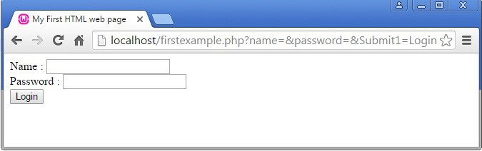
116
Percent Encoding - A Url Can Contain Only Unreserved And Reserved Characters From The Ascii Set. Reserved Ascii Characters Are Used As Delimiters Within The Url Syntax.
Reserved Characters : / ? # [ ] @ ! $ & ‘ ( ) * + , ; =
There Are Also Unsafe Characters Which Cannot Be Used In A Url. Control Characters Such As Null String Termination, Carriage Return, Line Feed, End Of File And Tab Are Unsafe.
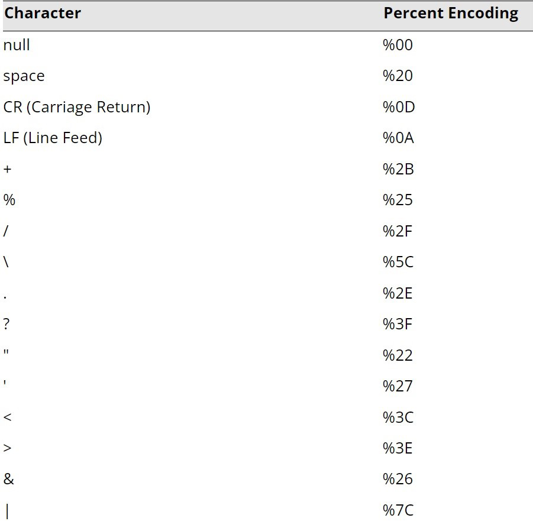
117
13.10 Api & Replay Attacks, Cross-Site Request
Forgery, Clickjacking & Ssl Strip Attacks
Application Programming Interface Attacks - Web Applications And Cloud Services Implement Application Program Interfaces (Apis) To Allow Consumers To Automate Services.
If The Api Isn’t Secure, Threat Actors Can Easily Take Advantage Of It To Compromise The Services And Data Stored On The Web Application. Api Calls Over Plain Http Are Not Secure And Could Easily Be Modified By A Third Party.
Some Other Common Attacks Against Apis Include
Ineffective Secrets Management, Allowing Threat Actors To Discover An Api Key And
Perform Any Action Authorized To That Key.
Lack Of Input Validation Allowing The Threat Actor To Insert Arbitrary Parameters Into Api
Methods And Queries. This Is Often Referred To As Allowing Unsanitized Input.
Error Messages Revealing Clues To A Potential Adversary. (Username/Password)
Denial Of Service (Dos) By Bombarding The Api With Bogus Calls.
Replay Attacks - Session Management Enables Web Applications To Uniquely Identify A User Across A Number Of Different Actions And Requests.
To Establish A Session, The Server Normally Gives The Client Some Type Of Token And A Replay Attack Works By Sniffing Or Guessing The Token Value And Then Submitting It To Re-Establish The Session Illegitimately.
Http By Default Is A Stateless Protocol Meaning The Server Preserves No Information About The Client But Cookies Allow For The Preservation Of Data.
A Cookie Has A Name, Value And Optional Security And Expiry Attributes. Cookies Can Either Be Persistent And Non-Persistent.
Cross-Site Request Forgery - A Client-Side Or Cross-Site Request Forgery (Csrf Or Xsrf) Can Exploit Applications That Use Cookies To Authenticate Users And Track Sessions.
In Order To Work, The Attacker Must Convince The Victim To Start A Session With The Target Site. The Attacker Must Then Pass An Http Request To The Victim’s Browser That Spoofs An Action On The Target Site Such As Changing A Password Or An Email Address.
118
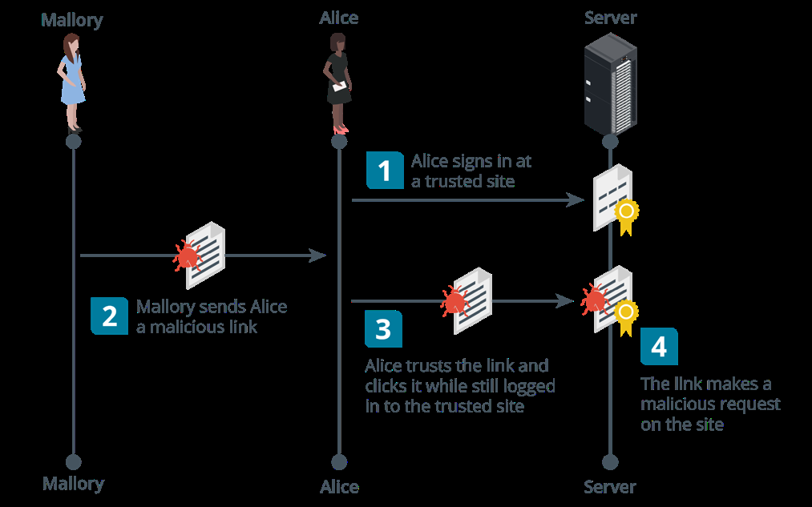
If The Target Site Assumes The Browser Is Authenticated Because There Is A Valid Session Cookie, It Will Accept The Attacker’s Input As Genuine.
This Is Also Referred To As A Confused Deputy Attack.
Clickjacking - This Is An Attack Where What The User Sees And Trusts As A Web Application With Some Sort Of Login Page Or Form Contains A Malicious Layer Or Invisible Iframe That Allows An Attacker To Intercept Or Redirect User Input.
Clickjacking Can Be Launched Using Any Type Of Compromise That Allows The Adversary To Run Arbitrary Code As A Script. It Can Be Mitigated By Using Http Response Headers That Instruct The Browser Not To Open Frames From Different Origins
Ssl Strip - This Is Launched Against Clients On A Local Network As They Try To Make Connections To Websites. The Threat Actor First Performs A Mitm Attack Via Arp Poisoning To Masquerade As The Default Gateway.
When A Client Requests An Http Site That Redirects To An Https Site In An Unsafe Way, The Sslstrip Utility Proxies The Request And Response, Serving The Client The Http Site With An Unencrypted Login Form Thus Capturing Any User Credentials.
119
13.11 Injection Attacks
XML and LDAP injection attacks - an injection attack can target other types of protocols where the application takes user input to construct a query, filter or document.
Extensible markup language (xml) injection - xml is used by apps for authentication and authorizations and for other types of data exchange and uploading.
Lightweight directory access protocol (ldap) injection - ldap is another example of query language. ldap is specifically used to read and write network directory databases. a threat actor could exploit either unauthenticated access or a vulnerability in a client app to submit arbitrary ldap queries. This could allow accounts to be created or deleted or for the attacker to change authorizations and privileges.
For example a web form could construct a query from authenticating the valid credentials for bob and pa$$w0rd like this:
(& (username = bob)(password = pa$$w0rd))
If the form input is not sanitized, the threat actor could bypass the password check by entering a valid username plus an ldap filter string
(& (username = bob)(&))
Directory traversal & command injection attacks - directory traversal is another type of injection attack performed against a web server.
The threat actor submits a request for a file outside the web server’s root directory by submitting a path to navigate to the parent directory (../)
The threat actor might use a canonicalization attack to disguise the nature of the malicious input.
Canonicalization refers to the way the server converts between different methods by which a resource (file path or url) may be represented and submitted to the simplest method used by the server to process the input.
Server-side request forgery (SSRF) - SSRF causes the server application to process an arbitrary request that targets another service either on the same host or a different one.
It exploits both the lack of authentication between the internal servers and services and weak input validation allowing the attacker to submit unsanitized requests or api parameters.
120
SECTION 14 -
SUMMARIZE SECURITY
GOVERNANCE CONCEPTS
14.1 Regulations, Standards & Legislation
Key Frameworks, Benchmarks And Configuration Guides May Be Used To Demonstrate Compliance With A Country’s Legal Requirements.
Due Diligence Is A Legal Term Meaning That Responsible Persons Have Not Been Negligent In Discharging Their Duties.
Sarbanes-Oxley Act (Sox) Mandates The Implementation Of Risk Assessments, Internal
Controls And Audit Procedures.
The Computer Security Act (1987) Requires Federal Agencies To Develop Security
Policies For Computer Systems That Process Confidential Information.
In 2002, The Federal Information Security Management Act (Fisma) Was Introduced To
Govern The Security Of Data Processed By Federal Government Agencies.
Some Regulations Have Specific Cybersecurity Control Requirements While Others Simply Mandate “Best Practice” As Represented By A Particular Industry Or International Framework.
Personal Data And General Data Protection Regulation (GDPR)
This legislation focuses on information security as it affects privacy or personal data.
GDPR means that personal data cannot be collected, processed or retained without the individual’s informed consent.
Compliance issues are complicated by the fact that laws derive from different sources e.g gdpr does not apply to american data subjects but it does apply to american companies that collect or process the personal data of people in eu countries.
National, Territory Or State Laws
In the US there are federal laws such as the gramm-leach-bliley act (GLBA) for financial services and the health insurance portability and accountability act (HIPAA).
121
14.2 ISO and Cloud Frameworks
Iso 27k - The International Organization For Standardization (Iso) Has Produced A Cybersecurity Framework In Conjunction With The International Electrotechnical Commission (Iec).
Unlike The Nist Framework, The Iso 27001 Must Be Purchased. The Iso 27001 Is Part Of An Overall 27000 Series Of Information Security Standards Also Known As 27k.
There Are 3 Main Versions Of The Iso 27k
27002 - Security Controls
27017 & 27018 - Cloud Security
27701 - Personal Data & Privacy
Iso 31k - This Is An Overall Framework For Enterprise Risk Management (Erm). Erm Considers Risks And Opportunities Beyond Cybersecurity By Including Financial, Customer Service And Legal Liability Factors.
Cloud Security Alliance (Csa) - The Not-For-Profit Organization Produces Various Resources To Assist Cloud Service Providers (Csp) In Setting Up And Delivering Secure Cloud Platforms.
Security Guidance - A Best Practice Summary Analyzing The Unique Challenges Of Cloud Environments And How On-Premises Controls Can Be Adapted To Them.
Enterprise Reference Architecture - Best Practice Methodology And Tools For Csps To Use In Architecting Cloud Solutions.
Cloud Controls Matrix - Lists Specific Controls And Assessment Guidelines That Should Be Implemented By Csps.
Statements On Standards For Attestation Engagements (SSAE) - the SSAE are audit specifications developed by the american institute of certified public accountants (aicpa). These audits are designed to assure consumers that service providers (notably cloud providers) meet professional standards.
Within Ssae No. 18, There Are Several Levels Of Reporting:
Service Organization Control (Soc2) - Soc2 Evaluates The Internal Controls Implemented
122
By The Service Provider To Ensure Compliance With Trust Services Criteria (Tsc) When Storing And Processing Customer Data.
An Soc Type 1 Report Assesses The System Design, While A Type 2 Report Assesses The Ongoing Effectiveness Of The Security Architecture Over A Period Of 6-12 Months.
Soc2 Reports Are Highly Detailed And Designed To Be Restricted.
Soc 3 - A Less Detailed Report Certifying Compliance With Soc2. They Can Be Freely Distributed.
14.3 Governance Structure
Enterprise Governance - This is a system that holds to account, directs and controls all entities involved in an organization.
Governance is useful in identifying roles and responsibilities.
A role is a specific position or job title that an individual occupies within an organization. Stewardship is the responsible oversight and protection of something entrusted to one’s care. Responsibility refers to the specific duties or tasks that an individual is expected to fulfill within a given role.
Board of Directors
Determine the desired future state of information/cyber security and provide funding.
Exercise Due Care (providing the standard of care that a prudent person would have
provided under the same conditions.)
A fiduciary is a person or organization who holds a position of trust
They also provide oversight and authorization of organizational activities.
Executive Management Duties
Make decisions to achieve strategic goals and objectives
Manage risks to an acceptable risk and also comply with applicable laws and regulations.
Manage resources and the budget efficiently
Evaluate performance measures
Implement oversight process
123
Information Security Steering Committee
Make decisions to achieve information security strategic goals and objectives
Set a cybersecurity budget, authorize risk decisions and report to the board of
committee.
They provide an effective communication channel for ensuring the alignment of the
security program and business objectives.
Chief Information Security Officer (CISO) - Interprets strategic decisions and is ultimately responsible for the success or failure of the information security program.
Supporting roles include Information Assurance Officer/Manager (IAO/IAM), Information Security Officer (ISO)
Complimentary Organization Roles Functional Roles
Privacy Officer - Responsible for Owners - Responsible for oversight and
developing and implementing all decisions related to access control and
aspects of the privacy program. protection.
Compliance Officer - Responsible for Custodians - Responsible for advising,
identifying all applicable regulatory and managing and monitoring data
contractual requirements. protection controls.
Physical Security Officer - Responsible Users - Responsible for treating data in
for ensuring that appropriate physical accordance with security policies and
security procedures are implemented objectives.
Internal Audit - Responsible for
providing independent and objective
assurance services.
14.4 Governance Documents
These are used to communicate direction, expectations and rules.
They are typically derived from the information security strategy which is also derived from the desired future state.
Policies
These codify the high-level requirements for securing information assets and ensure CIA
They should be approved and authorized by the organization’s highest governing body
Modifications should be minor over extended periods of time
124
Standards, Baselines & Guidelines
Standards serve as precise specifications for the implementation of policy and dictate
mandatory requirements.
Baselines are the aggregate of standards for a specific category or grouping such as a
platform, device type or location
Guidelines assist in helping to understand and conform to a standard. Guidelines are not
mandatory.
Procedures -Procedures are instructions for how to carry out an action. They focus on discrete actions or steps with a specific starting and ending point.
Simple Step - Lists sequential actions. There is no decision making
Hierarchical - Organizes the instructions in a hierarchical structure where each level is
nested within the one above it.
Graphic - Presents in pictorial or symbol form.
Flowchart - Is used to communicate a process and when decision making is required.
Plan - This is a detailed strategy or tactic for doing or achieving something.
The function of the plan is to provide instructions and guidance on how to execute or respond to a situation within a certain timeframe usually with defined stages and with designated resources.
Acceptable Use Policy (AUP) -This details user community obligations pertaining to Information and information systems. It contains rules that specifically pertain to acceptable behavior and actions that are prohibited.
It’s a teaching document that develops security awareness and must be written in a way that is easy to understand.
Non-disclosure Agreement (NDA) -Establishes data ownership and the reason why the data is being provided.
It’s primarily used to prevent data disclosure and prevents forfeiture of patent rights.
Acceptable Use Policy Agreement - When a user signs it, they acknowledge that they understand and agree to abide by the AUP including violation sanctions up to and including termination.
Agreement should be executed prior to being granted access to information and information systems.
125
14.5 Change Management
The objective is to drastically minimize the risk and impact a change can have on business operations.
Types of Changes
Standard - Occurs frequently, is low risk and has a pre-established procedure with
documented tasks for completion (updates, patch management)
Normal - Not standard but also not an emergency. Can be approved by the change
control board (change of anti-malware product)
Major - May have significant financial implications and could be high risk. May require
multiple levels of management approval (change to new Operating system)
Emergency - This is one that must be assessed and implemented without prior
authorization to quickly resolve a major incident (switch to a backup server)
Configuration Management KPIs - Key Performance Indicators (KPIs) are business metrics used to measure performance in relation to strategic goals and objectives.
Successful Changes - The higher the better
Backlog of Changes - Changes not yet completed and should not grow over time
Emergency Changes - It should not trend upward
14.6 Configuration Management
This is a set of practices designed to ensure that Configuration Items (CI) are deployed in a consistent state and stay that way through their frame. The primary goal is to minimize risk and ensure the configuration of services are known, good and trusted.
Configuration Management Elements
Configuration Item (CI) -This is an aggregation of information system components and
treated as a single entity throughout the configuration management process.
Baseline Configuration (BC) - A set of specifications for a CI that has been reviewed and
agreed upon and can be changed only through change control procedures.
Automated Provisioning - This is the ability to deploy information technology (IT) or operational technology (OT) systems and services using predefined automated procedures without requiring human intervention.
The primary goal is to reduce or eliminate manual dependencies and human error.
126
Provisioning Processes
Demand - Generated Resource Allocation - is the automatic provisioning and
deprovisioning of resources based upon demand.
Idempotence - Is a principle that every time an automated configuration script is run, the
same exact result is produced.
Immutable System - Immutability is the principle that resources should not be changed,
only created and destroyed (replace not fix).
Infrastructure as Code - Is using code to manage configurations and automate
provisioning of infrastructure. Supports Idempotence.
14.7 Scripting, Automation & Orchestration
Scripting - This is a set of instructions the execution of a local script, retrieve (interactive/non-interactive) used to and execute remote resources using automate a sequence of repetitive tasks. various network protocols and encode
Usually written in a scripting language payloads. which means they are interpreted and Bash - Can be used to direct the not compiled (the scripts are read and execution of a local script, retrieve and executed line-by-line by the processor at execute remote resources using various
runtime). network protocols and automate tasks
on a LINUX/UNIX platform
Scripting Tools Macro - A macro virus can infect a
software program and trigger a set of Python - Interpreted, open-source
programming language with an actions when the program is opened or
extensive available library. run.
PowerShell - Microsoft automation and Automation - This is the execution of tasks configuration management framework without human intervention.
Bash - Linux | Unix shell command line The goals are to eliminate manual interface (CLI) and scripting language. dependencies and human error, improve Macro - An automated input sequence quality of service, increase agility and
that imitates keystrokes or mouse reduce risk. Typically requires significant
actions. investment.
Adversarial Scripting Orchestration -Orchestration is the
Python - Very easy to learn and is used computer systems, applications and/or coordination and management of multiple
for writing attack code and tools services, stringing together multiple tasks in order to execute a larger workflow or PowerShell - Can be used to direct
process.
127
SECTION 15 -
EXPLAIN RISK
MANAGEMENT
15.1 Risk management process
Risk management involves all processes from assessing the risk to managing it.
Identify Assets - Humans, data, emails, hardware (scoping)
Identify Vulnerabilities - Weak passwords, unpatched systems
Identify Exploits & Threats - Hackers, natural disasters
Determine Safeguards & Countermeasures - Security policies, backups, patches,
updates etc
Determine which risks are acceptable or not
Enterprise risk management -Risk management is treated very differently in companies of different sizes and compliance requirements. most companies will institute enterprise risk management (erm) policies and procedures based on frameworks such as nist’s rmf
Risk Types
External
Internal
Multiparty (Supply Chain Attack)
Intellectual Property (Ip) Theft
Software Compliance/Licensing
Legacy Systems
128
Quantitative risk assessment - This aims to assign concrete values to each risk factor:
Single loss expectancy (sle) - The amount that would be lost in a single occurrence of
the risk factor. it’s calculated by multiplying the value of the asset by an exposure factor
(ef). ef is the percentage of the asset value that would be lost.
Annualized loss expectancy (ale) - The amount that would be lost over the course of a
year. done by multiplying the sle by the annualized rate of occurrence (aro)
It’s important to realize that the value of an asset isn’t just about its material value but also the damage its compromise could cost the company (e.g a server is worth more than its cost).
Qualitative risk assessment - Seeks out people’s opinions of which risk factors are significant. assets and risks may be placed in categories such as high, medium or low value and critical, high, medium or low probability respectively.
Risk Factor Impact ARO Cost Of Control Overall Risk
Legacy Windows
Clients
untrained Staff
No Antivirus
Software
15.2 Risk Controls
Risk Mitigation - This is the most common method of handling risk and typically involves the use of countermeasure or safe guards. The likelihood of the risk occurring must be reduced to the absolute minimum.
Risk Avoidance - The cost of the risk involved is too high and must be avoided. Mitigation means the risk probabilities are reduced to the maximum while avoidance means the risk is eliminated completely
Risk Transference - This involves assigning or transferring the risk to another entity or organization. In other words, the risk is outsourced because the organization cannot mitigate the risk on it’s own due to cost.
129
Risk Acceptance - The cost of mitigating the risk outweighs the cost of losing the asset. Risk can also be accepted when there isn’t a better solution.
Risk Appetite & Residual Risk - Where risk acceptance has the scope of a single system, risk appetite has a project or institution-wide scope and is typically constrained by regulation and compliance. Where inherent risks are the risks before security controls have been applied, residual risks are those carried over after the controls have been applied.
Control risk is a measure of how much less effective a security control has become over time e.G antivirus.
Risk Register - A document showing the results of risk assessments in a comprehensible format.
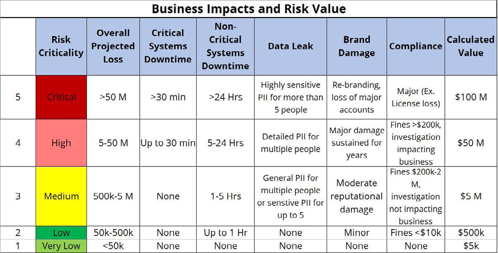
15.3 Business Impact Analysis
Business Impact Analysis (BIA) - This is the process of assessing what losses might occur for a range of threat scenarios.
Where BIA identifies risks, the business continuity plan (BCP) identifies controls and processes that enable an organization to maintain critical workflows in the face of an incident.
Mission Essential Function (MEF) - This is one that cannot be deferred. the business must be able to perform the function as close to continually as possible.
130
Maximum Tolerable Downtime (MTD) - The maximum amount of time a business can be down before it can no longer recover in a reasonable time or manner.
Recovery Time Objective (RTO) - The targeted amount of time to recover business operations after a disaster.
Work Recovery Time (WRT) - Following systems recovery, there may be additional work to reintegrate different systems, test overall functionality and brief system users on any changes.
Recovery Point Objective (RPO) - Refers to the maximum amount of data that can be lost after recovery from a disaster before the loss exceeds what is tolerable to an organization.
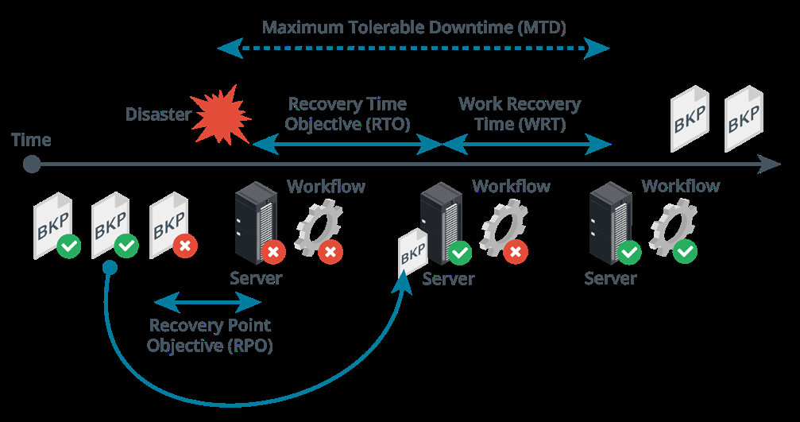
Identification of critical systems - Asset types include:
People
Tangible assets
Intangible assets (ideas, reputation, brand)
Procedures (supply chains, critical procedures)
Single points of failure - A spof is an asset that causes the entire workflow to collapse if it is damaged or unavailable. Can be mitigated by provisioning redundant components.
131
Mean time to failure (mttf) and mean time between failures (mtbf) represent the expected lifetime of a product. Mttf should be used for non-repairable assets for example, a hard drive can be described with an mttf while a server with mtbf.
Calculation for mtbf is the total time divided by the number of failures. For example 10
devices that run for 50 hours and two of them fail, the mtbf is 250.
Calculation for mttf for the same test is the total time divided by number of devices so 50
hours/failure.
Mean time to repair (mttr) is a measure of the time taken to correct a fault so that the system is restored to full operation. This metric is important for determining the overall rto.
Disasters
Internal Vs External- Internal Could Be System Faults Or Malicious/Accidental Act By An
Employee
Person-Made - War, Terrorism, Pollution
Environmental - Natural Disaster
A Site Risk Assessment Should Be Conducted To Identify Risks From These Factors.
Disaster Recovery Plans
Identify Scenarios For Natural And Non-Natural Disasters And Options For Protecting
Systems
Identify Tasks, Resources And Responsibilities For Responding To A Disaster
Train Staff In The Disaster Planning Procedures And How To React Well To Change.
Functional Recovery Plans
Walkthroughs, Workshops And Seminars
Tabletop Exercises -Staff “Ghost” The Same Procedures As They Would In A Disaster
Without Actually Creating Disaster Conditions.
Functional Exercises -Action Based Sessions Where Employees Can Validate The Drp
By Performing Scenario-Based Activities In A Simulated Environment
Full-Scale Exercises -Action Based Sessions That Reflect Real Situations. Held On Site
And Uses Real Equipment And Real Personnel.
132
15.4 Third-Party Risk Management & Security Agreements
A root of trust is only trustworthy if the vendor has implemented it properly. Anyone with time and resources to modify the computer’s firmware could create some sort of backdoor access.
For a tpm to be trustworthy, the supply chain of chip manufacturers, firmware authors and the administrative staff responsible for providing the computing device to the user must all be trustworthy.
When assessing suppliers for risk, it is helpful to distinguish two types of relationship
Vendor - This means a supplier of commodity goods and services possibly with some
level of customization and direct support.
Business partner -This implies a closer relationship where two companies share quite
closely aligned business goals.
End of life systems - When a manufacturer discontinues the sales of a product, it enters an end of life (eol) phase in which support and availability of spares and updates become more limited.
An end of service life (eosl) system is one that is no longer supported by its developer or vendor.
Windows versions are given five years of mainstream support and five years of extended support (during which only security updates are provided).
Organizational security agreements - It is important to remember that although one can outsource virtually any service to a third party, one cannot outsource legal accountability for these services.
Issues of security risk awareness, shared duties and contractual responsibilities can be set out in a formal legal agreement.
Memorandum of understanding (mou) - A preliminary agreement to express an intent to work together. They are usually intended to be relatively informal and not contract binding.
Business partnership agreement (bpa) - The most common model of this in it are the agreements between large companies and their resellers and solution providers.
Nondisclosure agreement (NDA) - Used between companies and employees/contractors/ other companies as a legal basis for protecting information assets.
Service level agreement (SLA) - A contractual agreement describing the terms under which a service is provided.
Measurement systems analysis (MSA) - A means of evaluating the data collection and statistical methods used by a quality management process to ensure they are robust.
133
15.5 Audit & Assurance
Information security assessment - This is the process of determining how effectively the entity being evaluated meets the specific security requirements.
Examination - is the process of interviewing, reviewing, inspecting, studying and
observing to facilitate understanding, comparing standards or to obtain evidence (audit)
Testing - is the process of exercising objects under specified conditions to compare
actual and expected behaviors (pen testing)
Assurance -This is the measure of confidence that intended controls, plans and processes are effective in their application.
The objective of an audit is to provide independent assurance based on evidence.
Audit plan - This is a high-level description of audit work to be performed in a specific time frame.
The plan may include objectives, resource requirements and reporting expectations. The final audience for the audit results is either an executive or board audit committee.
Audit focus
Compliance - Meeting laws, regulations and industry standards.
Security & privacy - Attaining required levels of cia and privacy
Internal controls - Evaluation of the design of the controls and assessment of the
operational effectiveness and efficiency of the controls
Alignment - Assure alignment with organizational and control objectives.
Sampling -This is used to infer characteristics about a population based upon the characteristics of a sample of that population.
Evidence sampling is applying a procedure to less than 100% of the population.
Audit examination opinions
Unqualified -Rendered when the auditor does not have any significant reservations
(clean report)
Qualified - Rendered when there are minor deviations or scope limitations.
Adverse - Rendered when the target is not in conformance with the control objectives or
when the evidence is misleading or misstated.
Disclaimer -This means the auditor was not able to render an opinion due to certain/
named circumstances.
134
Audit framework -This is a structured and systematic approach used by auditors to plan, execute and report on an audit engagement. They are typically developed by auditing standards-setting bodies.
Isaca cobit 5
Aicpa (ssae18)
Ssae 18 soc versions
Soc1 is a report of controls relevant to user entities financial statements
Soc2 is based upon trust services principles (tsp) reports on controls intended to mitigate
risk related to security, cia and privacy
Soc 3 is similar to soc2 but does not detail testing performed and is designed for public
distribution.
15.6 PenTest Attack Life Cycle
Reconnaissance -Is typically followed by an initial exploitation phase where a software
tool is used to gain some sort of access to the target’s network.
Persistence -this is the tester’s ability to reconnect to the compromised host and use it as
a remote access tool (rat) or backdoor.
Privilege escalation -The tester attempts to map out the internal network and discover
the services running on it.
Lateral movement -Gaining control over other hosts and usually involves executing the
attack or scripting tools such as powershell.
Pivoting -If a pen tester achieves a foothold on a perimeter server, a pivot allows them to
bypass a network boundary and compromise servers on an inside network.
Actions on objectives -For a threat actor, this means stealing data while for a tester it
would be a matter of the scope definition.
Cleanup - For an attacker, this means removing evidence of the attack while for a pen
tester, this means removing any backdoors or tools and ensuring the system is not less
secure than its pre-engagement state.
135
SECTION 16 -
SUMMARIZE DATA
PROTECTION AND
COMPLIANCE CONCEPTS
16.1 Privacy & Sensitive Data Concepts
The value of an information asset can be determined by how much damage its compromise would cause the company.
It is important to consider how sensitive data must be secured not just at rest but also in transit.
Information life cycle management
Creation/collection
Distribution/use
Retention
Disposal
Data roles & responsibilities - A data governance policy describes the security controls that will be applied to protect data at each stage of its life cycle.
Data owner - A senior executive role with ultimate responsibility for maintaining the cia of the information asset. The owner also typically chooses a steward and custodian and directs their actions and sets the budget and resource allocation for controls.
Data steward - Primarily responsible for data quality. Ensuring data is labeled and identified with appropriate metadata and that it is stored in a secure format
Data custodian - This role handles managing the system on which the data assets are stored. This includes responsibility for enforcing access control, encryption and backup measures.
Data privacy officer (dpo) - This role is responsible for oversight of any personally identifiable information (pii) assets managed by the company.
136
In the context of legislation and regulations Confidential (secret) - Highly sensitive protecting personal privacy, the following information to be viewed only by two institutional roles are important authorized people and possibly by
trusted parties under an nda.
Data controller - The entity responsible for determining why and how data is stored, Critical (top secret) - Extremely collected and used for ensuring that these valuable information and viewing is purposes and means are lawful. The severely restricted. controller has ultimate responsibility for
privacy breaches and is not permitted to kind of information asset. Data can also be classified based on the transfer that responsibility.
Data processor Information created and owned by the - An entity engaged by Proprietary/intellectual property (ip) - the data controller to assist with technical company typically about the products collection, storage or analysis tasks. A they make. data processor follows the instructions of a data controller with regard to collection or Private/personal data - Information that processing. relates to an individual identity.
Data classifications - Data can be Sensitive - Refers to company data classified based on the degree of that could cause serious harm or confidentiality required. embarrassment if it is leaked to the
public. Sensitive personal data includes Public (unclassified) - no restrictions political opinions, sexual orientation,
and can be viewed by the public. Poses
health records , tax records etc.
no real risk to the company.
Data types
Personally identifiable information (pii) - This is data that can be used to identify, contact or locate an individual such as a social security number.
An ip address can also be used to locate an individual and could be considered to be a type of pii.
Customer data -This can be institutional information but also personal information about the customer’s employees such as sales and technical support contacts.
Financial information -This refers to data held about bank and investment accounts plus tax returns and even credit/debit cards. The payment card industry data security standard (pci dss) defines the safe handling and storage of this information.
Government data - Government agencies have complex data collection and processing requirements. The data may sometimes be shared with companies for analysis under very strict agreements to preserve security and privacy.
Data retention -This refers to backing up and archiving information assets in order to comply with business policies and applicable laws and regulations.
137
16.2 Data Sovereignty, Privacy Breaches & Data Sharing
Data sovereignty & geographical considerations - Some states and nations may respect data more or less than others and likewise some nations may disapprove of the nature and content of certain data.
Data sovereignty refers to a jurisdiction preventing or restricting processing and storage from taking place on systems that do not physically reside within that jurisdiction. For example gdpr protections are extended to any eu citizen while they are within the eu borders.
Geographic access requirements fall into two different scenarios
Storage locations might have to be carefully selected to mitigate data sovereignty issues.
Most cloud providers allow choice of data centers for processing and storage, ensuring
that information is not illegally transferred from a particular privacy jurisdiction without
consent.
Employees needing access from multiple geographic locations. Cloud-based file and
database services can apply constraint-based access controls to validate the user’s
geographic location before authorizing access.
A data breach occurs when information is read, modified or deleted without authorization.
Notification & escalation - Responses to a data breach must be configured so the appropriate personnel are notified immediately of the breach.
The first responders might be able to handle the incident if its a minor issue however in more serious cases, the case may need to be escalated to a more senior manager.
In certain cases, a timescale might also be applied. For example with gdpr, all affected individuals must be informed of the breach within 72 hours after the breach occurred.
Data sharing & privacy terms of agreement
Service level agreement (sla) - A contractual agreement setting out the detailed terms
under which a service is provided.
Interconnection security agreement (isa) - ISAS set out a security risk awareness
process and commits the agency and supplier to implementing security controls.
Nondisclosure agreement (nda) - This is a legal basis for protecting information assets.
138
Data sharing and use agreement - Personal data can only be collected for a specific
purpose but data sets can be subject to deidentification to remove personal data.
However there are risks of re identification if combined with other data sources. A
data sharing and use agreement is a legal means of preventing this risk. It can specify
terms for the way a data set can be analyzed and proscribe the use of re identification
techniques.
16.3 Privacy And Data Controls
Data can be described as being in one of three states:
Data at rest - Data is in some sort of
persistent storage media. This data
can be encrypted and acls can also be
applied to it Data protection against exfiltration
Data in transit - This is the state when data is transmitted over a network. All sensitive data is encrypted at rest
In this state it can be protected by a Create and maintain offsite backups of
transport encryption protocol such as data
tls or ipsec.
Ensure that systems storing or
Data in use/processing - This is the transmitting sensitive data are
state when data is present in volatile implementing access controls.
Trusted execution environment (tee) Restrict the types of network channels memory such as the ram cache.
mechanisms e.G intel software guard that attackers can use to transfer data from the network to the outside. extensions are able to encrypt the data
as it exists in memory. Train users about document
confidentiality and the use of encryption
to store and transmit data securely.
Data exfiltration - Data exfiltration can take place via a wide variety of mechanisms:
Copying the data to removable media such as usb drive or smartphone
Using a network protocol such as ftp, http or email
Communicating it orally over a phone or even with the use of text messaging.
139
Data loss prevention
Dlp products automate the discovery and classification of data types and enforce rules so that data is not viewed or transferred without proper authorization.
Policy server - to configure classification, confidentiality and privacy rules and policies,
log incidents and compile reports
Endpoint agents - to enforce policy on client computers even when they are not
connected to the network
Network agents - to scan communications at network borders and interface with web
and messaging servers to enforce policy.
Remediation is the action the dlp software takes when it detects a policy violation.
Alert only
Block - The user is prevented from copying the original file but retains access to it.
User may not alerted to the policy violation but it will be logged as an incident by the
management engine.
Quarantine - Access to the original file is denied to the user.
Tombstone -The original file is quarantined and replaced with one describing the policy
violation and how the user can release it again.
Privacy enhancing technologies -data minimization is the principle that data should only be processed and stored if that is necessary to perform the purpose for which it is collected.
Data minimization affects the data retention policy and its necessary to track how long a data point has been stored for and whether continued retention is necessary for a legitimate processing function.
Pseudo-anonymization modifies identifying information so that reidentification depends on an alternate data source which must be kept separate. With access to the alternated data, pseudo-anonymization methods are reversible.
140
Database identification methods
Data masking - Can mean that all or part of the contents of a field are redacted by substituting all character strings with “x”.
Tokenization - Means that all or part of data in a field is replaced with a randomly generated token. The token is stored with the original value on a token server or vault separate to the production database. It’s often used as a substitute for encryption.
Aggregation/binding - Another identification technique is to generalize the data such as substituting a specific age with a broader age band.
Hashing & salting - A cryptographic hash produces a fixed-length string from arbitrary-length plaintext data using an algorithm such as sha. If the function is secure, it should not be possible to match the hash back to a plaintext. A salt is an additional value stored with the hashed data field. The purpose of salt is to frustrate attempts to crack the hashes.
16.4 Privacy Principles
Privacy - This is the right of an individual to control the use of their personal information.
Data minimization approach limits data collection to only what is required to fulfill a specific purpose.
Privacy Statement - This describes how an organization collects, uses, shares and protects personal information collected from individuals.
Right to be Forgotten - This pertains to an individual’s right to have their personal information removed or deleted from online platforms, search engine results or other publicly accessible sources.
It is not an absolute right and needs to be balanced against other rights such as freedom of expression, public interest or legal obligations.
141
Privacy Enhancing Technologies
Data Masking - A technique used to protect sensitive data by replacing it with fictional or
deidentified data
Tokenization - A technique used to desensitize data by replacing the original data with
an unrelated value of the same length and format.
Anonymization - Is the process in which individually identifiable data is altered in a way it
can no longer be traced back to the original owner
Pseudo-Anonymization - Is a method to substitute identifiable data with a reversible
consistent value
Privacy Management Components
Privacy Program - Privacy statement, tools for data mapping, executive sponsorship and
privacy impact assessment
Operations - Cookie compliance, privacy enhancing technologies, reporting and
assessment and consent mechanisms
Incident and Breach Response - Incident prevention, detection, management,
notification triggers and reporting obligations.
16.5 Compliance Monitoring
Compliance - This means acting in accordance with applicable rules, laws, policies and obligations.
Organizations are responsible for complying with all local, state, federal and union laws and regulations, international treaties as well as contractual obligations.
Jurisdiction - This is the power or right of a legal or political body to exercise their authority over a person, subject or territory.
Consequences of Non-Compliance
Fines & Sanctions Contractual Impact
Loss of License Resource Utilization
Reputational Damage
142
Compliance Monitoring - This is the active process of evaluating activities and behaviors to verify compliance and identify any deviations or non-compliant actions.
Monitoring activities include: Data Analysis
Manual Inspections Automated Systems
Audits Specialized Tools
Automated Compliance Monitoring - This utilizes automated tools to monitor and assess compliance.
Automated systems can analyze large volumes of data in real time to identify compliance breaches and also generate alerts when specific conditions or thresholds are met.
16.6 Education, Training & Awareness
Security Education Training Awareness
Attribute Why How What
Level Insight Knowledge Information
Object Understanding Skill Behavior
Discussion, Seminar, Lecture, case study, Interactive vedio,
Method
Reading hands-on posters, games
Measure Essay Problem solving True/false,multiple choice
Impact Long-term Intermediate Shorts-terms
143
16.7 Personnel Policies
Acceptable use policy (aup)
Code of conduct and social media
analysis
Use of personally owned devices in the
workplace
Clean desk policy
User and role-based training - Appropriate security awareness training needs to be delivered to employees at all levels including end users, technical staff and executives.
Overview of the organization’s security policies
Data handling
Password & account management
Awareness of social engineering and phishing
Diversity of training techniques - Using a diversity of training techniques helps to improve engagement and retention.
Phishing campaigns
Capture the flag - Usually used in ethical hacker training programs and gamified
competitions.
Computer-based training and gamification
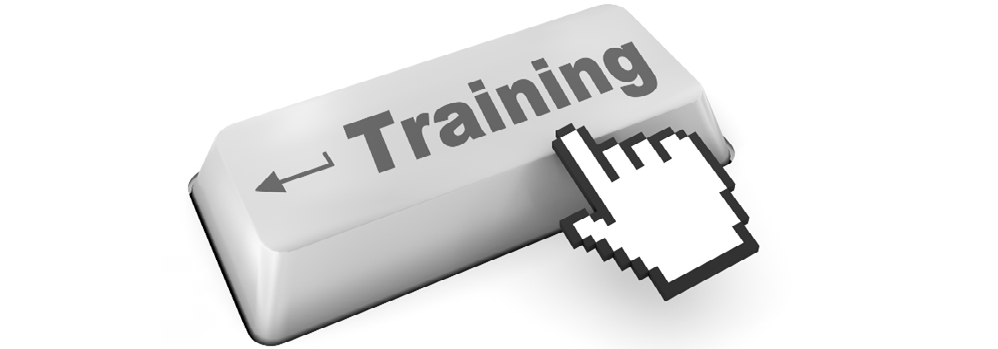
144